ГОСУДАРСТВЕННЫЙ
ОРДЕНА ТРУДОВОГО КРАСНОГО ЗНАМЕНИ
ПРОЕКТНЫЙ ИНСТИТУТ СОЮЗВОДОКАНАЛПРОЕКТ
ГОССТРОЯ СССР
ПОСОБИЕ
по
проектированию автоматизации и
диспетчеризации систем водоснабжения
(к СНиП 2.04.02-84)
Утверждено
приказом СоюзводоканалНИИпроекта
от 5 марта 1985 г. № 41
МОСКВА
ЦЕНТРАЛЬНЫЙ ИНСТИТУТ ТИПОВОГО ПРОЕКТИРОВАНИЯ
1985
Рекомендовано к изданию техническим советом Союзводоканалпроекта Госстроя СССР.
Содержит сведения об объемах автоматизации, технологического контроля и системах управления водопроводными сооружениями.
Для инженерно-технических работников проектных организаций.
При пользовании Пособием следует учитывать утвержденные изменения строительных норм и правил и государственных стандартов, публикуемые в журнале «Бюллетень строительной техники» Госстроя СССР и информационном указателе «Государственные стандарты. СССР» Госстандарта.
Пособие разработано на основании проведенных исследований, обобщения отечественного и зарубежного опыта проектирования и эксплуатации систем автоматизации водопроводных сооружений, а также «Инструкции по проектированию автоматизации и диспетчеризации систем водоснабжения» (СН 516-79).
В Пособии приведены рекомендуемые объемы технологического контроля, автоматизации, диспетчерского управления и телемеханизации в сетях и на сооружениях, обеспечивающих нормальную эксплуатацию систем водоснабжения; освещены основные вопросы проектирования автоматизированной системы управления технологическим процессом (АСУ ТП) водоснабжения; приведена методика расчета экономической эффективности АСУ ТП и системы телемеханизации (как первого этапа) для определения целесообразности их проектирования.
По мере накопления опыта эксплуатации установок автоматизации, а также появления новых разработок и результатов исследований Пособие будет дополнено принципиальными схемами и решениями по автоматизации отдельных механизмов и систем, методикой расчета технико-экономического обоснования выбора регулируемого привода и другими материалами.
Пособие разработано Союзводоканалпроектом - инженеры П. А. Беленькая, А. Е. Высота, И. М. Хинчин (разд. 1 - 4) совместно с ВНИИ ВОДГЕО - д-р техн. наук Д. Н. Смирнов, кандидаты техн. наук Б. С. Лезнов, Я. Н. Гинзбург, инж. А. С. Дмитриев (разд. 1 и 2) и АКХ им. К. Д. Памфилова - кандидаты техн. наук И. С. Эгильский, Т. А. Урнова, В. В. Финкельштейн (разд. 5).
1.1. Система автоматического управления предусматривается на всех сооружениях водоснабжения.
1.2. При определении объема автоматизации сооружений водоснабжения учитываются их производительность, режим работы, степень ответственности, требования к надежности, а также перспектива сокращения численности обслуживающего персонала, улучшение условий труда работающих, снижение потребления электроэнергии, расхода воды и реагентов.
1.3. Контролируемые параметры определяются исходя из принятой степени автоматизации сооружений, условий их эксплуатации и требований органов санитарно-эпидемиологической службы к составу и свойствам воды.
1.4. Система автоматизации сооружений водоснабжения должна предусматривать: автоматическое управление основными технологическими процессами в соответствии с заданным режимом или по заданной программе; автоматический контроль основных параметров, характеризующих режим работы технологического оборудования и его состояние; автоматическое регулирование параметров, определяющих технологический режим работы отдельных сооружений и их экономичность.
1.5. При разработке систем автоматизации, телемеханизации и технологического контроля, как правило, необходимо использовать приборы и оборудование, серийно изготовляемые промышленностью, а также типовые конструкции.
1.6. Для автоматизации сооружений с большим количеством объектов управления или технологических процессов с количеством логических операций свыше 25 целесообразно использовать микропроцессорные контроллеры вместо релейно-контактной аппаратуры.
Применение микропроцессорных контроллеров является прогрессивным направлением развития автоматики.
Контроллер обеспечивает управление объектом или группой объектов, работающих независимо друг от друга или взаимосвязанных одной технологической системой, позволяет осуществлять логические зависимости программным путем без вмешательства в его устройство, а также менять программу в случае необходимости в процессе работы.
1.7. Для измерения параметров, контроль которых еще не автоматизирован, должен быть предусмотрен лабораторный контроль.
1.8. Система автоматического управления должна предусматривать возможность местного управления отдельными устройствами или сооружениями.
2.1. На водозаборах поверхностных вод предусматривается автоматическая промывка вращающихся сеток.
2.2. Автоматическую промывку вращающихся сеток рекомендуется выполнять по перепаду уровней до и после сеток (длительность промывки устанавливается программным реле) и по временной программе, при этом должна быть предусмотрена возможность изменения интервала между промывками, уточняемого в процессе эксплуатации сооружения.
2.3. На водозаборах подземных вод при переменном водопотреблении рекомендуется предусматривать следующие способы управления насосами:
дистанционное или телемеханическое - по командам из пункта управления (ПУ);
автоматическое - в зависимости от уровня воды в резервуаре;
автоматическое - по давлению в сети.
2.4. Технологические параметры, подлежащие контролю на водозаборных сооружениях, приведены в табл. 1.
Таблица 1
|
Вид информации |
Цель измерения или сигнализации |
|
|
Водозаборные сооружения поверхностных вод |
||
|
Уровень воды в водоеме и водоприемном колодце |
Измерение |
Контроль |
|
Перепад уровней на вращающихся сетках |
Сигнализация |
Автоматизация промывки |
|
Водозаборные сооружения подземных вод |
||
|
Температура в наземном павильоне или заглубленной камере |
Сигнализация |
Контроль, автоматизация электроотопления |
|
Расход воды от каждого водозаборного сооружения (скважины, шахтного колодца и т.д.) |
Измерение |
Контроль |
|
Аварийный уровень воды в скважинах, уровень воды в приемных колодцах |
Сигнализация |
Отключение насоса при аварийном понижении уровня |
|
Давление в напорном трубопроводе каждого водозаборного сооружения |
Измерение |
Контроль |
|
Открывание дверей |
Сигнализация |
« |
2.5. Схема автоматизации должна обеспечивать пуск и остановку насоса при поступлении управляющего импульса и аварийное отключение насоса при срабатывании электрических и технологических защит.
Все вспомогательные операции (открывание и закрывание задвижек, заливка насосов, охлаждение подшипников и т.д.), связанные с пуском и остановкой насосов, а также включением резервных насосных агрегатов, за исключением агрегатов станций третьей категории надежности действия, должны выполняться автоматически.
2.6. При аварийном отключении насоса в результате действия защитных устройств схемы управления насосами с пуском и остановкой на закрытую задвижку должны обеспечивать последующее автоматическое закрывание задвижки. При неисправности задвижки в процессе пуска насос следует отключить.
2.7. Для упрощения схемы автоматизации и повышения ее надежности насосы, как правило, рекомендуется устанавливать под заливом.
При необходимости применения принудительного залива его следует контролировать с помощью датчиков, исключающих возможность включения незалитого насоса.
2.8. Схема автоматизации пуска насоса при принудительном заливе зависит от принятого способа залива:
в случаях поагрегатного оборудования насосов вакуум-насосами при подаче импульса на включение насосного агрегата схема автоматизации должна обеспечивать включение вакуум-насоса, контроль залива, включение насосного агрегата и отключение вакуум-насоса после пуска насосного агрегата;
в случае залива насосов от общей вакуум-установки при подаче импульса на включение насосного агрегата схема автоматизации должна обеспечивать включение вакуум-насоса, подключение насоса к вакуумной линии, контроль залива, включение насосного агрегата с последующим отключением его от вакуумной линии и отключение вакуум-насоса.
На случай срыва вакуума необходимо предусматривать автоматическое повторное включение вакуум-насоса или автоматическое включение резервного вакуум-насоса.
2.9. При заливе насосов с помощью вакуум-котла предусматривается автоматическая работа вакуум-насосов в зависимости от уровня воды в вакуум-котле. При подаче импульса на включение насосного агрегата необходимо предусматривать автоматическое отключение его от вакуум-котла.
2.10. На автоматизированных насосных станциях должно быть предусмотрено автоматическое отключение рабочих насосов при затоплении машинного зала.
2.11. Для насосных установок с переменным режимом работы необходимо предусматривать возможность регулирования выходных параметров (давления, подачи) насосных агрегатов.
Режим работы установки рекомендуется регулировать изменением количества работающих агрегатов, дросселированием потока воды в напорных коммуникациях станции, изменением частоты вращения насосов.
2.12. Регулирование частоты вращения насосов требует применения специальных видов электропривода, а именно: привода с многоскоростными электродвигателями - двух- и многоскоростных асинхронных короткозамкнутых электродвигателей переменного тока;
привода с индукторными муфтами скольжения - асинхронных короткозамкнутых электродвигателей переменного тока;
привода по схеме асинхронно-вентильного каскада - асинхронных электродвигателей переменного тока с фазным ротором;
частотного привода - асинхронных короткозамкнутых электродвигателей переменного тока;
привода на базе вентильного электродвигателя - синхронных электродвигателей переменного тока.
2.13. Применение регулируемого привода, с одной стороны, стабилизирует давление в водопроводной сети, и за счет этого обеспечивается экономия электроэнергии на подачу воды, сокращаются утечки и непроизводительные расходы воды, появляется возможность уменьшить площадь насосных станций путем увеличения единичной мощности насосных агрегатов и уменьшения их количества. С другой стороны, регулируемый привод усложняет эксплуатацию оборудования, требует более квалифицированного обслуживания, приводит к увеличению капитальных затрат. При разработке технико-экономического обоснования эти факторы должны быть учтены и сопоставлены по приведенным затратам согласно существующим методикам.
Применение системы автоматического регулирования (CAP) с регулируемым приводом, как правило, обеспечивает экономию электроэнергии на 5 - 15 %, а в отдельных случаях - на 20 %. Расход воды за счет сокращения утечек и непроизводительных расходов уменьшается на 3 - 4 %.
2.14. Обычно CAP с регулируемым приводом целесообразно применять в насосных установках сравнительно большой мощности (75 - 100 кВт и выше), характеризующихся существенной неравномерностью подачи и большой динамической составляющей высоты водоподъема, т.е. большой крутизной характеристики сети. Крутые характеристики сети обычно соответствуют протяженным водоводам и расположению насосной станции на тех же или более высоких геодезических отметках, что и потребитель.
Неравномерность подачи воды характеризуется параметром l и равна:
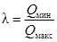
где Qмин - минимальное значение секундной подачи в течение расчетного периода, например года;
Qмакс - максимальное значение секундной подачи за тот же период.
Крутизна характеристики сети Н¢п определяется соотношением
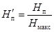
где Н¢п - противодавление, определяемое статической составляющей высоты водоподъема или работой других насосов, подающих воду в ту же сеть;
Нмакс - полная высота водоподъема, соответствующая подаче Qмакc.
Применение CAP с регулируемым приводом обычно экономически оправдано в насосных установках с агрегатами мощностью 75 кВт и выше с параметрами l и Н¢п не более 0,8 - 0,85.
В менее мощных установках регулирование целесообразно осуществлять дросселированием потока воды в напорных коммуникациях станций. Для дросселирования целесообразно применять дроссельные затворы, а не задвижки, являющиеся запорными устройствами и не предназначенные для регулирования. Дросселирование хотя и не является оптимальным способом регулирования по энергозатратам, но препятствует распространению повышенного давления в сети и, следовательно, уменьшает утечку и непроизводительные расходы воды.
2.15. При построении CAP в качестве регулируемого параметра рекомендуется использовать давление в диктующей точке (диктующих точках) сети, а в отдельных случаях - на коллекторе насосной станции. Последнее возможно, когда станция расположена вблизи потребителей, например станция подкачки городского (промышленного) водоснабжения, или когда расчетами либо экспериментами установлено соответствие между изменениями давления в напорном коллекторе и диктующей точке.
В ряде случаев в качестве регулируемого параметра может быть использован уровень воды в резервуаре или расход воды в водоводе. Рекомендации по выбору контролируемых параметров сети, водоводов и емкостей приведены в пп. 2.58 - 2.65.
2.16. Выбор типа регулируемого привода должен обосновываться технико-экономическим расчетом.
2.17. Многоскоростные электродвигатели рекомендуется использовать в тех случаях, когда применение плавно регулируемых приводов экономически не оправдано, например при ступенчатом изменении водопотребления, а также в тех случаях, когда отсутствуют подходящие по своим параметрам плавно регулируемые приводы. Двух- и многоскоростные двигатели позволяют увеличивать число напорных характеристик насосной установки без увеличения числа насосных агрегатов.
2.18. Регулируемым приводом из экономических соображений оборудуется, как правило, один агрегат в группе из двух-трех рабочих. В качестве регулируемого принимается наиболее крупный агрегат с наиболее пологой характеристикой. Эта мера препятствует образованию «мертвых зон». Оборудовать регулируемым приводом все работающие агрегаты следует в тех случаях, когда изменение частоты вращения регулируемого агрегата выводит остальные агрегаты в ненормальный режим работы, например в зону низких КПД или кавитации.
2.19. Технологические параметры, подлежащие контролю на насосных станциях, приведены в табл. 2.
Таблица 2
|
Вид информации |
Цель измерения или сигнализации |
|
|
Давление в напорных водоводах |
Измерение |
Контроль, регулирование подачи насосной станции |
|
Расход воды по каждому напорному водоводу |
« |
Контроль |
|
Давление на насосном агрегате |
Измерение и сигнализация |
Контроль, отключение |
|
Вакуум во всасывающих линиях насосов и в вакуум-установках |
Измерение |
Контроль |
|
Уровень воды в резервуарах и приемных камерах |
Измерение и сигнализация |
Контроль, отключение насосов |
|
Уровень воды в дренажном приямке |
Сигнализация |
Автоматизация работы дренажных насосов |
|
Температура подшипников агрегатов (если предусмотрена установка датчиков) |
« |
Отключение агрегата при перегреве |
|
Температура обмотки статора электродвигателя (при необходимости) |
Измерение |
Контроль |
|
Температура в помещениях необслуживаемых насосных станций |
Сигнализация |
Контроль, автоматизация электроотопления и вентиляции |
|
Уровень воды в вакуум-котле |
« |
Автоматизация работы вакуум-насосов |
|
Давление в баке-ресивере |
Измерение |
Автоматизация работы насосов и компрессоров в гидропневматических насосных станциях |
|
Уровень воды в баке-ресивере |
Сигнализация |
Контроль |
|
Затопление машинного зала |
« |
« |
|
Аварийный уровень затопления |
« |
Контроль, автоматическое отключение всех насосов |
2.20. Электрические и трубные проводки, монтаж и установку контрольно-измерительных приборов следует выполнять в соответствии с руководящими материалами (РМ 4), типовыми чертежами и нормалями Главмонтажавтоматики.
2.21. Расход воды, подаваемой по водоводам насосных станций, следует измерять расходомерами переменного перепада с диафрагмами или трубами Вентури, ультразвуковыми или электромагнитными расходомерами. На насосных станциях с подачей воды до 100 м3/ч по каждому водоводу допускается использовать турбинные водосчетчики для измерения объема поданной воды.
2.22. Для уменьшения трудоемкости, исключения контакта людей с реагентами и экономного расходования реагентов все операции, связанные с использованием химических реагентов на водоочистных станциях, максимально автоматизируются.
Для упрощения автоматизации технологическая схема реагентного хозяйства должна быть построена по блочному принципу, без усложняющих переключений оборудования.
2.23. В качестве дозирующих устройств растворов коагулянтов и других реагентов в автоматизированных системах рекомендуется применять насосы-дозаторы, регулирующие клапаны и бункерные дозаторы.
При использовании плунжерных насосов-дозаторов необходимо предусматривать полную очистку раствора от абразивного шлака в отстойниках, гидроциклонах или других устройствах.
Применение плунжерных насосов-дозаторов для дозирования известковой суспензии не рекомендуется. Для дозирования известковой суспензии рекомендуется применять бункерные дозаторы.
Плунжерные насосы-дозаторы предусматриваются, как правило, при постоянных расходах обрабатываемой воды.
Регулирующие клапаны должны записываться из баков постоянного уровня или через регуляторы напора.
Бункерные дозаторы следует устанавливать выше расходных баков.
При дозировании в напорный трубопровод растворы реагентов подаются во всасывающую линию насосов.
2.24. Системы автоматического дозирования раствора коагулянта в обрабатываемую воду рекомендуется выполнять:
по соотношению расходов обрабатываемой воды и раствора коагулянта;
по заданному приращению удельной электрической проводимости (УЭП) воды, смешанной с коагулянтом.
При всех системах дозирования оптимальную дозу коагулянта следует устанавливать пробным коагулированием.
2.25. Системы автоматического дозирования по заданному соотношению расходов обрабатываемой воды и раствора коагулянта строятся на базе расходомеров воды (обычно существующих на водоочистных станциях для учета воды), электромагнитных и иных расходомеров раствора коагулянта с преобразователем, футерованных эмалью или фторопластом.
Системы дозирования, построенные по соотношению расходов обрабатываемой воды и раствора коагулянта, требуют постоянной стабилизации концентрации рабочего раствора коагулянта.
2.26. Системы дозирования коагулянта, действующие по заданной УЭП воды, строятся на базе узкопредельных кондуктометрических концентратомеров повышенной чувствительности с дифференциальной измерительной схемой.
Кондуктометры, предназначенные для этой цели, должны быть рассчитаны на измерение приращения УЭП воды в диапазоне 0,5 - 35 мСм/см и иметь чувствительность не менее 0,0025 мСм/см. Кондуктометры с указанными данными практически пригодны для контроля процессов коагуляции природных вод бассейнов рек на всей территории СССР.
В качестве кондуктометров для измерения приращения УЭП воды за счет введенного коагулянта могут использоваться приборы, разрабатываемые на базе серийных приборов КК-1.
При колебаниях расходов обрабатываемой воды, не превышающих 5 % среднего часового расхода, можно применять одноконтурные CAP потока коагулянта, не связывая их с расходом обрабатываемой воды.
2.27. Систему стабилизации концентрации рабочего раствора коагулянта рекомендуется строить на базе бесконтактных (индукционных), кондуктометрических концентратомеров и запорных задвижек с электрическим приводом.
Кондуктометры должны быть рассчитаны на диапазон измерения 1 - 6 × 10-2 См/см [растворы коагулянта с концентрацией 3 - 15 % Al2 (SO4)3].
В качестве кондуктометрических концентратомеров для рабочих растворов коагулянта на указанные пределы измерения разрабатываются приборы на базе приборов КК-8, 9.
Подача в обрабатываемую воду растворов полиакриламида, кремниевой кислоты и других флокулянтов ввиду их весьма малых расходов может строиться по упрощенным схемам без применения кондуктометрии, с использованием дистанционно управляемого клапана, регулирующего подачу раствора. При необходимости может быть применена схема пропорционального дозирования по расходу.
2.28. Подача щелочного реагента (известкового молока) в процессе коагуляции воды автоматизируется по величине рН (характеризующей в данном случае гидратную щелочность). Ввиду медленного изменения щелочности в природных водах следует ограничиться одноконтурной CAP, действующей по отклонению от заданного значения величины рН, реализующей законы ПИ-регулирования. Датчик рН-метра рекомендуется устанавливать в створе полного перемешивания реагента с обрабатываемой водой (на выходе из смесителя или вблизи него).
При выборе электродов следует руководствоваться техническими данными на них и технологической характеристикой контролируемой среды.
2.29. При фторировании воды автоматическое дозирование фторсодержащих реагентов следует производить при помощи CAP, построенных с применением ионоселективных фторидных электродов. В паре с электродом на фтор-ионы применяются вспомогательные электроды ЭХСВ-1 или ЭВП-Л3. В качестве первичных и вторичных преобразователей при измерении концентрации фтор-ионов рекомендуется менять датчики и преобразователи промышленных иономеров (рН-метров).
Необходимо обеспечить постоянный расход контролируемой среды через датчик.
CAP подачи фторсодержащих реагентов рекомендуется проектировать одноконтурными, действующими по принципу отклонения от заданной концентрации фтор-ионов в обработанной воде.
Процесс обесфторивания рекомендуется контролировать теми же средствами.
2.30. Все CAP процесса обработки воды газообразным (жидким) хлором для обеззараживания и иных целей строятся на базе автоматизированных вакуумных дозаторов (хлораторов).
В качестве автоматизированных хлораторов рекомендуется применить дозаторы хлора комплексной системы «Аквахлор» НИКТИ ГХ УССР.
Дозаторы системы «Аквахлор» выпускаются производительностью от 5 до 150 кг/ч. Автоматизированный дозатор входит в состав комплексной системы «Аквахлор», состоящей из автоматически управляемых испарителей, эжекторов, анализаторов хлора, панелей управления и сигнализации.
Лучшими дозаторами хлора признаны хлораторы Таллинского водопровода. Они имеют две модификации: с ручным (С-0277) и с автоматическим (С-0378) управлением.
Хлораторы Таллинского водопровода серийно не выпускаются, однако на указанные хлораторы эстонским институтом Коммуналпроект разработаны техническая документация и рабочие чертежи.
2.31. Современные CAP процесса хлорирования воды относятся к типу стабилизационных, действующих по отклонению от заданных концентраций остаточного хлора в обработанной воде, с автоматическим анализатором в канале обратной связи. САР хлора должна обеспечивать содержание хлора в обработанной воде с отклонением от норм ± 0,05 мг/л.
Характерной особенностью CAP процесса обеззараживания воды хлором является большое запаздывание сигнала, поступающего на регулятор и исполнительный механизм от анализатора хлора.
Продолжительность контакта свободного активного хлора с водой должна быть не менее 30 мин, связанного хлора - не менее 1 ч. Такая продолжительность контакта определяет расстояние между точкой ввода хлора в воду и точкой отбора хлорированной воды на анализ, т.е. основное время транспортного запаздывания.
Указанные неблагоприятные динамические свойства объекта регулирования требуют применения в CAP процесса хлорирования воды регулирующих устройств с высокими динамическими качествами (например, регуляторов Р27, системы «Каскад-2» или РБИЗ-П системы АКЭСР) и динамических преобразователей с памятью (например, Д07 или БДП-П).
Динамические качества CAP процесса хлорирования воды можно повысить, уменьшив время запаздывания путем приближения точки отбора хлорированной воды к точке ввода хлора. В этом случае для контроля за содержанием остаточного хлора устанавливается второй анализатор в створе, где обеспечивается нормированная продолжительность контакта хлора с водой.
Наиболее распространенный способ улучшения динамических свойств CAP процесса хлорирования воды заключается в устройстве двухконтурной (двухкаскадной) CAP.
Первый контур обеспечивает заданное соотношение между расходом хлор-газа и расходом обрабатываемой воды, второй корректирует эти соотношения по отклонению от нормы количества остаточного хлора в обработанной воде.
Если надежность автоматического анализатора хлора недостаточно высокая, в длительном режиме работы ограничиваются устройством первого контура, т.е. строят CAP стабилизации принятой дозы хлора в зависимости только от расхода обрабатываемой воды, корректируя эту дозу вручную по данным лабораторных измерений или по показаниям анализаторов.
2.32. При обработке воды хлором с целью ее обесцвечивания или борьбы с биологическими отложениями, когда оптимальная доза хлора устанавливается по опытным данным, системы управления хлораторами строятся также по схемам стабилизации с коррекцией дозы хлора по концентрации остаточного хлора.
2.33. При проектировании и устройстве систем автоматизации и технологического контроля процесса хлорирования воды следует иметь в виду, что современные анализаторы хлора в воде построены по амперметрическому методу измерения. В режиме работы с применением реагентов (йодистого калия - для перевода хлора в эквивалентное количество йодида и буферного раствора - для создания кислой среды с рН = 4,5 в пробе воды, поступающей в электрохимическую ячейку анализатора) анализаторы амперметрического типа измеряют содержание общего активного хлора (свободного + связанного). В режиме работы без применения йодистого калия анализатор измеряет только содержание свободного активного хлора.
2.34. В отстойниках и осветлителях предусматривается устройство для автоматического контроля предельного уровня осадка. Автоматизации выпуска осадка должна осуществляться в тех случаях, когда предусмотренная проектом частота выпуска осадка из каждой секции больше одного раза в сутки.
2.35. Автоматизацию выпуска осадка следует осуществлять по достижении предельного уровня, при котором сигнал от датчика уровня осадка должен подаваться на привод выпускной задвижки, или при механизированном удалении осадка на привод соответствующего оборудования, например скребков.
Возможно дистанционное управление выпуском осадка из ПУ по сигналу о достижении предельного уровня. Продолжительность выпуска осадка должна уточняться в процессе эксплуатации.
2.36. При автоматическом выпуске осадка вводится блокировка, исключающая, как правило, возможность одновременного выпуска осадка из нескольких отстойников или осветлителей.
2.37. На фильтрах регулирование скорости фильтрования осуществляется по расходу фильтрованной воды или по уровню воды в фильтре.
При регулировании по уровню воды в фильтрах должно быть обеспечено равномерное распределение ее между фильтрами, находящимися в работе.
2.38. В качестве дросселирующего устройства в регуляторах скорости фильтрования рекомендуется применять дисковые затворы и дроссельные поворотные заслонки. Допускается применение простейших поплавковых клапанов.
2.39. В тех случаях, когда скорость фильтрования необходимо изменять, применяются управляемые регуляторы скорости фильтрования, позволяющие регулировать режим работы фильтров дистанционно с пульта управления.
2.40. Вывод фильтров на промывку рекомендуется осуществлять по потере напора в загрузке или по положению дросселирующего органа, установленного на трубопроводе фильтрованной воды.
Допускается вывод фильтров на промывку по сигналу о повышении уровня в фильтре или по временной программе.
2.41. На станциях очистки воды с числом фильтров свыше 10 автоматизируется процесс промывки. При числе фильтров до 10 предусматриваются сигнализация о необходимости вывода фильтра на промывку и полуавтоматическое сблокированное управление промывкой с пультов или щитов.
2.42. Схема автоматизации процесса промывки фильтров и контактных осветлителей должна обеспечивать выполнение в определенной последовательности следующих операций: управления по заданной программе затворами и задвижками на трубопроводах, подводящих и отводящих обрабатываемую воду, пуска и остановки насосов промывной воды и воздуходувок при водовоздушной промывке.
2.43. В схемах автоматизации следует предусматривать блокировку, допускающую, как правило, промывку только одного фильтра.
2.44. Насосы промывной воды, как правило, принимаются с низковольтными приводными электродвигателями. При установке насосов с высоковольтными двигателями необходимо обеспечить такую последовательность промывки фильтров, при которой число включений насосов будет минимальным.
2.45. При подаче промывной воды из бака должна быть обеспечена возможность стабилизации ее расхода.
2.46. Автоматический вывод фильтров на промывку возможен при наличии запаса промывной воды в резервуаре.
2.47. При подаче промывной воды насосами перед промывкой фильтров рекомендуется предусматривать автоматический выпуск воздуха из трубопровода промывной воды.
2.48. Продолжительность промывки следует устанавливать по времени или по мутности промывной воды в отводящем трубопроводе.
2.49. На ионитовых фильтрах процесс регенерации рекомендуется автоматизировать.
Вывод на регенерацию катионитовых фильтров рекомендуется предусматривать по остаточной жесткости обработанной воды, анионитовых фильтров - по электропроводности воды.
Допускается полуавтоматический режим управления фильтрами, при котором вывод фильтра на регенерацию осуществляется по команде дежурного.
2.50. Процесс регенерации фильтров автоматизируется: взрыхление загрузки - по времени; подача регенерационного раствора - по его объему или по времени; отмывка загрузки - по времени; включение фильтра в работу - по окончании процесса регенерации.
2.51. Смешивание воды, прошедшей Na-катионитовые и Н-катионитовые фильтры, осуществляется по заданному значению рН смешанной воды или по ее щелочности.
2.52. Технологические параметры, подлежащие контролю на станциях очистки и подготовки воды, приведены в табл. 3.
Таблица 3
|
Вид информации |
Цель измерения или сигнализации |
|
|
Общие параметры для площадки очистных сооружений |
||
|
Расход исходной воды |
Измерение |
Автоматизация дозирования реагентов, контроль |
|
рН исходной и обработанной воды |
« |
Контроль |
|
Концентрация остаточного хлора в обработанной воде |
« |
Контроль, автоматизация дозирования |
|
Концентрация фтора в обработанной воде |
« |
То же |
|
Мутность исходной воды |
« |
Контроль |
|
Реагентное хозяйство |
||
|
Расход реагентов (хлора, коагулянта, извести и др.) - при необходимости |
Измерение |
Контроль, автоматизация дозирования |
|
Уровень в баках раствора реагентов |
Сигнализация |
Контроль, автоматизация приготовления |
|
Предельная концентрация хлора или озона в помещении |
« |
Контроль, автоматическое включение вентиляции |
|
Концентрация раствора реагентов |
Измерение |
Контроль, автоматизация приготовления и дозирования |
|
Давление в воздуходувных и компрессорных установках |
« |
Контроль |
|
Отстойники и осветлители |
||
|
Расход воды, проходящей через каждый осветлитель, отстойник |
Измерение |
Контроль распределения воды между осветлителями, отстойниками |
|
Уровень осадка |
Сигнализация |
Контроль, автоматизация выпуска осадка |
|
Мутность отстоенной воды |
Измерение |
Контроль |
|
Фильтры, контактные осветители |
||
|
Уровень воды в фильтрах, контактных осветлителях |
Сигнализация |
Контроль, регулирование уровня, вывод на промывку |
|
Потери напора в фильтре, контактном осветлителе |
Измерение |
Контроль, вывод на промывку |
|
Скорость фильтрования |
« |
Контроль, регулирование производительности |
|
Расход промывной воды |
« |
Контроль |
|
Давление промывных насосов |
« |
« |
|
Уровень в баках промывной воды |
Сигнализация |
Контроль, автоматизация заполнения бака |
|
Мутность фильтрованной воды |
Измерение |
Контроль |
|
Расход воздуха в воздуходувных и компрессорных установках |
« |
« |
|
Цветность фильтровальной воды |
« |
« |
|
Ионитовые фильтры |
||
|
Жесткость воды |
Измерение |
Вывод на регенерацию |
|
Солесодержание |
« |
То же |
|
Расход воды на каждом фильтре |
« |
Контроль |
2.53. Для оборотных систем с переменным расходом воды, как правило, предусматривается регулирование подачи воды насосными станциями.
2.54. На насосных станциях оборотного водоснабжения автоматизируются: включение резервных насосов охлажденной и нагретой воды; включение и отключение насосов нагретой воды в зависимости от уровня воды в приемных камерах (при наличии перепускной трубы между камерами нагретой и охлажденной воды); регулирование подачи насосов нагретой воды; отключение одного или нескольких насосов при аварийном снижении уровня воды в приемной камере (при отсутствии перепускной трубы).
2.55. Управление вентиляторами градирен рекомендуется осуществлять из насосной станции оборотного водоснабжения. В автоматическом режиме принимается работа не более 50 % вентиляторов. Число вентиляторов, работающих в автоматическом режиме, принимается в соответствии с возможными колебаниями температуры охлажденной воды.
Необходимо предусматривать возможность работы каждого вентилятора в режимах дистанционного и автоматического управления.
2.56. Целесообразность регулирования системы оборотного водоснабжения должна подтверждаться технико-экономическим расчетом, учитывающим экономию электроэнергии, потребляемой насосными агрегатами и электродвигателями вентиляторных градирен, обеспечение заданного перепада температуры охлажденной воды, снижение расхода воды.
2.57. Технологические параметры, подлежащие контролю в системах оборотного водоснабжения, приведены в табл. 4.
Таблица 4
|
Вид информации |
Цель измерения или сигнализации |
|
|
Сооружения систем оборотного водоснабжения |
||
|
Уровень в приемной камере охлажденной воды |
Измерение и сигнализация |
Контроль, автоматизация добавки свежей воды, блокировка насосов по уровню |
|
Уровень в приемной камере нагретой воды |
То же |
Контроль, регулирование работы насосов, автоматизация включения и отключения насосов по уровню (при наличии перепускного трубопровода, соединяющего камеры охлажденной и нагретой воды) |
|
Расход и давление в трубопроводах охлажденной воды |
Измерение |
Контроль, регулирование подачи насосной станции |
|
Температура в трубопроводах охлажденной воды |
« |
Контроль, автоматизация работы градирен |
|
Значение рН в трубопроводах охлажденной воды |
« |
Контроль, автоматизация дозирования реагентов |
|
Концентрация остаточного хлора в трубопроводах охлажденной воды |
« |
Контроль |
|
Расход и давление в трубопроводах нагретой воды |
« |
« |
|
Концентрация солей в трубопроводах нагретой воды |
« |
« |
|
Температура в трубопроводах нагретой воды |
« |
« |
|
Расход в трубопроводах свежей воды |
« |
« |
|
Уровень воды в дренажном приямке |
Сигнализация |
Контроль и автоматическое включение дренажных насосов |
|
Условия для обработки оборотной воды |
||
|
Уровень в мерниках серной кислоты |
Сигнализация |
Автоматизация заполнения |
|
Уровень в баке хлорной воды |
« |
Автоматизация выпуска в резервуар охлажденной воды |
|
Концентрация токсичных паров и газов в помещении |
« |
Включение вентиляции |
2.58. Регулирование режима работы водопровода в зависимости от его назначения, схемы управления и состава сооружений осуществляется за счет изменения режима работы насосов: по давлению в напорном коллекторе насосной станции, расходу воды в водоводе, давлению в диктующих точках и уровню воды в регулирующих резервуарах.
2.59. При регулировании по давлению в диктующих точках сети их число и ориентировочное расположение определяются гидравлическим расчетом сети. Дальнейшее уточнение производится в процессе эксплуатации водопровода.
2.60. При наличии нескольких точек, каждая из которых может при соответствующем режиме водопотребления оказаться диктующей, система автоматического контроля должна обеспечивать возможность определения давления во всех точках, при этом диктующей должна быть выбрана точка, в которой давление равно заданному или ниже его.
2.61. При давлении в нескольких контролируемых точках сети выше (ниже) требуемого диктующей следует считать точку, в которой разность между фактическим и заданным давлением будет наименьшей (наибольшей).
2.62. При разработке системы автоматического контроля давления в диктующих точках необходимо учитывать, что сигнал о необходимости понизить давление должен включаться только в случаях:
если давление превысит заданное во всех контролируемых точках, при этом сигнал должен быть включен до тех пор, пока давление в одной из этих точек не станет равным заданному;
если давление по сравнению с заданным снизилось хотя бы в одной из контролируемых точек, при этом сигнал должен быть включен до тех пор, пока давление в этой точке не повысится до заданного, а в других точках - не станет равным заданному или больше его.
2.63. При наличии нескольких водоисточников система автоматизации должна обеспечивать заданное давление в диктующих точках, а также условия работы сети и сооружений, при которых их эксплуатационные показатели будут наиболее высокими (минимальные суммарные энергозатраты на подачу воды, максимальные значения КПД насосов и др.). Для каждого конкретного случая режим работы следует устанавливать исходя из условий работы системы.
2.64. В водопроводной сети и связанных с ней сооружениях в качестве основных средств регулирования используются: для распределения потоков воды - электрифицированная запорная арматура, для регулирования давления или расхода - насосы с регулируемым приводом.
2.65. Целесообразность и способ регулирования режима работы водопровода рекомендуется определять в соответствии с пп. 2.13 и 2.14.
2.66. Технологические параметры, подлежащие контролю на водоводах, сети и регулирующих емкостях, приведены в табл. 5.
Таблица 5
|
Вид информации |
Цель измерения или сигнализации |
|
|
Давление и расход в водоводах |
Измерение |
CAP работы сети и сооружений |
|
Повреждение водоводов |
Сигнализация |
Автоматический контроль целостности водоводов |
|
Уровень воды в водонапорных башнях и резервуарах |
« |
CAP работы сети и сооружений |
|
Давление в диктующих точках |
« |
То же |
|
Расход в линиях сети (при необходимости) |
Измерение |
« |
3.1. Для систем водоснабжения, сооружения которых территориально разобщены, следует предусматривать диспетчерское управление.
3.2. При разработке системы диспетчерского управления необходимо предусматривать:
оперативное управление и контроль технологических процессов и работы оборудования;
поддержание необходимых режимов работы системы водоснабжения и отдельных ее сооружений и их оптимизацию;
своевременное обнаружение, локализацию и устранение аварий;
полное или частичное сокращение дежурного персонала на отдельных сооружениях;
экономию энергоресурсов, воды и реагентов.
3.3. Структуру диспетчерского управления системами водоснабжения следует предусматривать в соответствии с требованиями СНиП 2.04.02-84.
3.4. Функции центрального пункта управления (ЦПУ) при двух- или многоступенчатой структуре диспетчерского управления заключаются в управлении всей системой водоснабжения как единым комплексом и координации работы всех ПУ.
Функции ПУ ограничиваются управлением сооружениями подчиненного ему технологического узла.
3.5. В отдельных случаях при двухступенчатой структуре ЦПУ может выполнять функции ПУ для одного из технологических узлов или сооружений.
3.6. При управлении одиночными сооружениями водоснабжения из ПУ энергохозяйством промышленного предприятия допускается применение общего для всех отраслей энергетики диспетчерского щита и пульта.
3.7. Операторские пункты на сооружениях водоснабжения следует предусматривать в соответствии с требованиями СНиП 2.04.02-84.
3.8. Технические средства диспетчерского управления должны обеспечивать ПУ водоснабжения телефонной связью (в соответствии с требованиями СНиП 2.04.02-84), а также радиосвязью с удаленными объектами и аварийными автомашинами и давать возможность непосредственно управлять технологическим процессом и оборудованием и контролировать их работу.
3.9. Прямая телефонная связь ПУ водоснабжения или, для коммунальных водопроводов, абонируемая у АТС, должна осуществляться с подчиненными ПУ сооружениями, ЦПУ водоснабжения, службами управления по эксплуатации сооружений водоснабжения (аварийно-ремонтной, электротехнической, автоматики и КИП), начальником, главным инженером и главным энергетиком управления, вышестоящими диспетчерами энергетического хозяйства промышленного предприятия или города, диспетчером системы электроснабжения, от которой получают электропитание сооружения водоснабжения.
3.10. ПУ следует включать в административно-хозяйственную связь системы водоснабжения предприятия или города для решения служебных вопросов и создания обходных телефонных связей при повреждении прямой связи.
3.11. Объем и структуру телефонной связи (радиосвязи) диспетчерского управления необходимо определять исходя из общей схемы водоснабжения.
3.12. Технические средства диспетчерского управления и контроля позволяют диспетчеру:
непосредственно управлять технологическим процессом путем посылки команд, изменяющих состояние технологических агрегатов (включить - отключить, открыть - закрыть, больше - меньше) и устанавливающих или меняющих режим работы сооружений и программы автоматических устройств;
получать на ПУ отображение состояния технологической схемы и работы агрегатов в виде сигнализации на щите управления или мнемонической схеме с символами технологических агрегатов или других средств отображения информации;
иметь на ПУ визуальный и документальный контроль технологических параметров в системе водоснабжения.
3.13. В системах диспетчерского управления и контроля для передачи распределительной и известительной информации рекомендуется применять как телемеханические, так и дистанционные технические средства.
3.14. Телемеханизация диспетчерского управления является основным техническим средством диспетчеризации, позволяющим:
наиболее полно, непрерывно и в компактной форме отображать на ПУ технологический процесс;
быстро и на значительные расстояния передавать между ПУ и контролируемыми пунктами (КП) большие объемы распорядительной и известительной информации;
кроме оперативной информации передавать диспетчеру производственно-статистическую информацию, а также интегральные значения технологических параметров;
обеспечивать передачу в АСУ ТП водоснабжения необходимого объема информации;
осуществлять телеавтоматическую работу сооружений и агрегатов, удаленных на значительные расстояния;
использовать минимальное количество линий связи;
регистрировать и документировать значения технологических параметров и события в технологическом процессе.
3.15. Дистанционные средства управления могут быть сильноточными и слаботочными.
3.16. Сильноточное дистанционное диспетчерское управление на напряжение 110, 220, 380 В с использованием контрольных кабелей для связи объектов управления с операторским пунктом (ОП) или ПУ рекомендуется применять:
на одиночных сооружениях водоснабжения;
при небольших (до 200 м) расстояниях между ОП или ПУ и управляемыми сооружениями;
если нет необходимости подробно отображать технологический процесс в виде мнемонической схемы и достаточно иметь ограниченный объем сигнализации и измерений.
3.17. Слаботочное дистанционное управление на напряжение до 60 В и с использованием телефонных кабелей для связи объектов управления с ОП или ПУ рекомендуется применять:
для одиночных или нескольких рассредоточенных объектов с малым объемом информации, удаленных от ОП или ПУ на расстояние свыше 200 м, когда телемеханизация является нерациональной, а сильноточное управление нельзя осуществить из-за большой дальности;
когда на ПУ необходимо совместить телемеханические и дистанционные средства и выполнить условие однотипности операций управления и отображения информации.
3.18. В ряде случаев вместо средств телемеханики и дистанционного управления для обмена информацией между ПУ и КП рекомендуется использовать микропроцессорные контроллеры. Их применение целесообразно, когда:
могут быть использованы блоки для связи с удаленными объектами;
КП расположены в радиусе дальности действия контроллеров;
сооружения, в которых расположены КП, автоматизируются с применением контроллеров.
3.19. Для одного ПУ допускается одновременно применять разные способы диспетчерского управления при условии идентичности операций, выполняемых диспетчером, и однотипности отображения поступающей информации.
3.20. Способ диспетчерского управления и контроля следует выбирать на основании технико-экономического сравнения вариантов.
3.21. При включении системы водоснабжения в комплекс автоматизированной системы управления производством (АСУП) или АСУ ТП способ диспетчерского управления рекомендуется выбирать исходя из требований автоматизированной системы управления. При этом, как правило, применяется телемеханизация диспетчерского управления.
4.1. Объем телемеханизации рекомендуется определять в каждом конкретном случае с учетом задач, поставленных перед диспетчерской службой, и устанавливать совместно с объемом автоматизации, при этом предпочтение следует отдавать автоматизации.
4.2. С помощью принятого объема телеуправления диспетчеру должна предоставляться возможность для принятия мер по локализации и устранению аварийных ситуаций, изменению и установлению режимов работы, оперативному включению и отключению отдельных агрегатов или сооружений, если эти операции невозможно или нецелесообразно выполнять средствами автоматики.
В особо ответственных случаях телеуправление рекомендуется применять в качестве средства, дублирующего устройства автоматики.
4.3. Операции телеуправления для сооружений, работающих без постоянного дежурного персонала, не должны сопровождаться дополнительными оперативными переключениями на управляемом объекте.
4.4. Принятый объем телесигнализации должен позволять диспетчеру правильно оценивать состояние и работу системы водоснабжения и не должен содержать избыточной информации, которая не влияет на эту оценку.
В некоторых случаях объем сигнализации рекомендуется ограничивать аварийными и предупредительными сигналами.
4.5. Телесигнализация должна подтверждать диспетчеру правильность выполнения посланных им команд телеуправления.
4.6. Объем телеизмерений должен обеспечить диспетчера информацией о значениях основных технологических и электрических параметров, характеризующих работу системы водоснабжения в целом и отдельных ее сооружений и агрегатов.
4.7. При определении объема телеизмерений следует рассматривать возможность и целесообразность замены отдельных телеизмерений телесигнализацией предельных значений параметров и их отклонений.
4.8. Телеизмерение с целью сокращения числа каналов связи и приемных приборов следует, как правило, осуществлять по вызову или циклически.
4.9. Измеряемые параметры на телемеханизируемом ПУ следует, как правило, регистрировать в устройствах обработки информации путем периодической регистрации автоматическими регистрирующими устройствами.
При отсутствии средств автоматической обработки информации ее следует регистрировать на ПУ вручную в журналах.
4.10. Примерный объем телемеханического управления, телесигнализации и телеизмерений (соответственно ТУ, ТС, ТИ) следует принимать по табл. 6 (телемеханическое управление и телесигнализация) и табл. 7 (телеизмерения).
Таблица 6
|
Сооружение или агрегат |
Содержание информации |
Назначение и объем информации |
Примечание |
|
|
управление |
||||
|
Водозаборное сооружение с насосной станцией I подъема |
АВР насосов |
- |
1 |
Общая на группу насосов |
|
Аварийное состояние |
- |
1 |
Общая по сооружению |
|
|
Предупреждение о неисправностях |
- |
1 |
То же |
|
|
Неисправность вакуум-установки (при ее наличии) |
- |
1 |
Общая на установку |
|
|
Затопление машинного зала |
- |
1 |
Общая на станцию |
|
|
Насосы |
Включить - отключить |
- |
1 |
На каждый насосный агрегат |
|
Управление местное - диспетчерское |
- |
1 |
То же |
|
|
Режим работы рабочий - резервный |
- |
1 |
« |
|
|
Микрофильтры и промывные насосы |
Аварийное состояние |
- |
1 |
Общая на установку |
|
Предупреждение о неисправностях |
- |
1 |
То же |
|
|
Отстойники |
Наличие неисправности |
- |
1 |
Общая на отстойник |
|
Зал фильтров, контактных осветлителей |
Аварийное состояние |
- |
1 |
Общая по залу |
|
Предупреждение о неисправностях |
- |
1 |
То же |
|
|
Резервуары разного назначения |
Уровни: |
|||
|
максимальный |
- |
1 |
На резервуар |
|
|
минимальный |
- |
1 |
То же |
|
|
промежуточные |
- |
- |
При необходимости |
|
|
Насосные станции II и других подъемов |
АВР насосов |
- |
1 |
На группу насосов |
|
Аварийное состояние |
- |
1 |
Общая по станции |
|
|
Предупреждение о неисправностях |
- |
1 |
То же |
|
|
Затопление станции |
- |
1 |
« |
|
|
Насосы |
Включить - отключить |
1 |
1 |
На каждый насосный агрегат |
|
Режим работы рабочий - резервный |
- |
1 |
То же |
|
|
Управление местное - диспетчерское |
- |
1 |
« |
|
|
Промывные насосы |
Неисправность промывных насосов |
- |
1 |
Общая на группу насосов |
|
Задвижки на напорных линиях |
Открыть - закрыть |
1 |
1 |
На одну задвижку |
|
Неисправность |
- |
1 |
То же |
|
|
Реагентное хозяйство |
Аварийное состояние |
- |
1 |
Общая по реагентному хозяйству |
|
Предупреждение о неисправностях |
- |
1 |
То же |
|
|
Насосы подачи раствора реагента |
Неисправность |
- |
1 |
На группу насосов |
|
Воздуходувные агрегаты |
« |
- |
1 |
На группу воздуходувных агрегатов |
|
Хлораторная |
Аварийное состояние |
- |
1 |
Общая по хлораторной |
|
Предупреждение о неисправностях |
- |
1 |
То же |
|
|
Опасная концентрация хлора в воздухе хлораторной |
- |
1 |
« |
|
|
Шламовая насосная станция (перекачка осадка, повторной воды) |
Аварийное состояние |
- |
1 |
Общая по станции |
|
Предупреждение о неисправностях |
- |
1 |
То же |
|
|
Затопление станции |
- |
1 |
« |
|
|
Площадка сооружений |
Включение освещения |
1 |
1 |
На больших площадках включение освещения может выполняться по группам |
|
РУ 6 и 10 кВ (вводы, секционный выключатель) |
Включен - отключен |
- |
3 |
На распределительное устройство |
|
Аварийное состояние |
- |
1 |
Общая на распределительное устройство |
|
|
Предупреждение о неисправностях |
- |
1 |
То же |
|
|
Трансформаторная подстанция (вводы, секционный контактор) |
Включен - отключен |
- |
3 |
На трансформаторную подстанцию |
|
Аварийное состояние |
- |
1 |
Общая по подстанции |
|
|
Предупреждение о неисправностях |
- |
1 |
То же |
|
|
Насосная станция над артезианской скважиной |
Включить - отключить |
1 |
1 |
На станцию |
|
Аварийное состояние и предупреждение о неисправностях |
- |
1 |
Общая по станции |
|
|
Сетевые задвижки |
Открыть - закрыть |
1 |
- |
При необходимости на задвижку |
|
Открыта - закрыта |
- |
1 |
На задвижку |
|
|
Неисправность |
- |
1 |
То же |
|
|
Больше - меньше |
1 |
- |
« |
|
Примечание. АВР - автоматическое включение резерва.
Таблица 7
|
Содержание информации |
Количество измерений |
Примечание |
|
|
Водохранилище |
Уровень |
1 |
- |
|
Насосные станции I, II и других подъемов: |
|||
|
напорные водоводы |
Расход |
По количеству водоводов |
- |
|
Давление |
То же |
- |
|
|
основные насосные агрегаты |
Токи двигателей |
По количеству двигателей |
Необходимость измерения определяется проектом |
|
резервуары |
Уровень |
1 |
На резервуар или группу резервуаров. Необходимость измерения определяется проектом |
|
РУ 6 и 10 кВ |
Напряжение на вводах |
2 |
Необходимость измерения определяется проектом |
4.11. При выборе телемеханических устройств необходимо учитывать следующие факторы:
принятый объем телемеханизации и емкость устройства с учетом перспективы расширения;
надежность работы;
однотипность с ранее установленным;
возможность получения в последующем устройства, однотипного с выбранным, при расширении объекта;
быстроту действия;
простоту обслуживания, наладки и ремонта;
требования к питанию;
требования к каналам связи;
промышленное изготовление и комплектность поставки оборудования;
возможность стыковки устройств с датчиками, преобразователями, приемными приборами;
возможность сопряжения с ЭВМ, если предусматривается создание АСУ ТП (см. разд. 5);
возможность сопряжения с микропроцессорными контроллерами, если они применяются для автоматизации объектов на КП;
условия работы (запыленность, влажность, температуру, вибрацию);
технический уровень, соответствие требованиям государственных общесоюзных стандартов и государственной системе приборов;
патентную чистоту;
стоимость.
4.12. При выборе телемеханического устройства, как правило, следует использовать малопроводные многоканальные системы.
4.13. Многопроводные телемеханические или дистанционные системы рекомендуется использовать в тех случаях, когда применение малопроводной многоканальной системы технически и экономически нецелесообразно из-за избыточности ее информационной и аппаратурной емкости.
4.14. Для телемеханизации площадок с сооружениями водоснабжения или отдельных сооружений в качестве одного из вариантов рекомендуется применять микропроцессорные контроллеры.
4.15. При выборе устройств телемеханизации учитывается также стоимость требуемых каналов (линий) связи.
4.16. В одной системе водоснабжения возможно применение разных телемеханических систем, при этом должны быть соблюдены идентичность операций, выполняемых диспетчером, и однотипность отображения информации.
4.17. Возможно объединение в один контролируемый пункт нескольких сооружений. При этом связь между сооружением, на котором устанавливается полукомплект КП устройства телемеханики, и остальными сооружениями данного КП может выполняться по дистанционным схемам или с помощью микропроцессорных контроллеров.
4.18. Для удобства обслуживания устройств телеизмерений разных технологических и электрических параметров целесообразно применять единую систему телеизмерений. Как исключение допускается применять различные системы.
4.19. Датчики и контрольно-измерительные приборы для местного контроля технологических параметров, одновременно используемых и в системах телеизмерений, следует принимать с электрическими выходами сигналов в соответствии с ГОСТ 9895-78 и согласовывать с входами телеизмерений устройств телемеханики.
4.20. Для воспроизведения одноименных технологических параметров с различными пределами измерений допускается использовать один общий приемный прибор, градуированный в процентах.
4.21. Выходные уровни напряжений и токов для нестандартных устройств ТУ, ТС, ТИ, использующих в качестве линии связи каналы телефонной связи, следует принимать в соответствии с нормами технологического проектирования Министерства связи СССР.
4.22. ПУ систем водоснабжения следует размещать в соответствии с требованиями СНиП 2.04.02-84.
4.23. ПУ должен быть расположен по возможности вблизи центра потоков информации, которыми он обменивается с подчиненными ему КП.
4.24. ПУ систем водоснабжения можно располагать в одном здании с ПУ других энергетических систем предприятия или города.
При этом допускается объединение аппаратных и вспомогательных помещений разных ПУ и использование общих телемеханических устройств.
4.25. Размещать ПУ в зонах агрессивных газов, значительной запыленности, значительных шумов, в помещениях с сильной вибрацией не допускается.
4.26. Состав помещений ПУ следует определять в соответствии с требованиями СНиП 2.04.02-84.
4.27. ПУ рекомендуется компоновать в одно- и двухэтажном исполнении. При одноэтажном исполнении аппаратная должна размещаться рядом с диспетчерской, аккумуляторная и другие помещения - рядом или вблизи с аппаратной.
При двухэтажном исполнении аппаратная, как правило, располагается под помещением диспетчерской, аккумуляторная - рядом с аппаратной.
4.28. Диспетчерскую не рекомендуется ориентировать окнами на юг из-за слепящего действия солнечных лучей, ухудшающего наблюдение за сигнальными приборами. При невозможности выполнения этого условия в оконных переплетах следует предусматривать матовые стекла.
4.29. В диспетчерской устанавливаются:
диспетчерский пульт;
диспетчерский щит;
видеотерминальные устройства для отображения информации;
печатающие устройства для регистрации параметров и событий управляемого процесса;
телефонный коммутатор прямой диспетчерской связи и аппараты других видов связи.
4.30. На диспетчерском пульте располагаются ключи и кнопки управления технологическими агрегатами, вызова телеизмерений, коммутации устройств телемеханики, а также приемные приборы телеизмерений и вспомогательные сигнальные приборы контроля технологического процесса и контроля работы устройств телемеханики и линий (каналов) связи.
4.31. На диспетчерском щите располагается мнемосхема с встроенной сигнализацией, отображающая технологическую схему системы водоснабжения.
4.32. Видеотерминальные устройства (дисплеи) устанавливаются на ПУ в тех случаях, когда они входят в состав полукомплекта ПУ устройства телемеханики или когда в составе ПУ имеется вычислительный центр с ЭВМ, комплектуемый видеотерминальными устройствами.
На дисплеи рекомендуется выносить алфавитно-цифровую информацию о значениях технологических параметров, их отклонениях, состоянии оборудования и графическую информацию в виде подробных фрагментов технологических схем с сигнализацией о состоянии элементов этих схем.
С клавиатуры дисплея на экран можно вызывать информацию, хранимую в памяти устройств телемеханики или ЭВМ.
4.33. Мнемонические схемы диспетчерского щита могут быть мимическими (по схеме «темного щита») и световыми.
4.34. Мимические схемы имеют индивидуальное квитирование сигналов о несоответствии. При квитировании сигнал гаснет, а положение сигнализирующего объекта определяется положением ручки ключа квитирования, который встраивается в мнемосхему.
Мимические схемы применяются для отображения на щите или пульте диспетчера несложных и ненасыщенных технологических схем с редкими оперативными переключениями.
Для отображения информации с помощью мимических схем в диспетчерской обычно достаточно установить щит или пульт.
4.35. Основным видом мнемосхемы является световая, которая обычно выносится на щит, с общим квитированием, выполняемым, как правило, с пульта.
4.36. Световая мнемосхема диспетчерского щита в состоянии покоя не должна светиться.
Символы световой мнемосхемы должны зажигаться при включении диспетчером освещения щита и автоматически при получении любого известительного сигнала.
Автоматическое освещение мнемосхемы щита допускается выполнять по технологическим узлам (сооружениям) или по щиту в целом.
4.37. Для обработки отображаемой на мнемосхеме сигнализации рекомендуется применять микропроцессорные контроллеры, если устройство телемеханики не имеет узлов генерации мигающего света и квитирования сигналов.
4.38. При небольшом количестве приемных аналоговых телеизмерительных приборов, а также при применении для измерений цифровых табло допускается их установка на диспетчерском щите.
4.39. Воспроизведение телеизмерений по вызову должно сопровождаться световыми сигналами, указывающими на мнемосхеме точку, в которой производится измерение.
4.40. При установке в диспетчерской дисплея с подробным отображением отдельных агрегатов, узлов и сооружений мнемосхема может выполняться укрупненной с минимальным количеством основных сигналов, что позволяет резко сократить размеры диспетчерского щита или отказаться от его установки, используя только пульт.
4.41. На диспетчерском пульте кроме телемеханической аппаратуры размещаются телефонный коммутатор диспетчерской связи, аппаратура радиосвязи и отдельные телефонные аппараты.
4.42. Расположение диспетчерского щита и пульта должно обеспечивать диспетчеру хорошее обозрение мнемонической схемы щита.
Расстояние между рабочим местом диспетчера за пультом и щитом из условий обозреваемости должно быть от 3 до 4,5 м, но не более 6 м.
4.43. Расстояние от щитов, шкафов и стоек до стены должно составлять 1 м. Допускаются местные сужения до 0,8 м.
Проходы между двумя рядами щитов, шкафов и стоек должны быть 1,2 м. Допускаются сокращения до 1 м.
Проходы между торцами щитов, шкафов, стоек и стенами должны быть не менее 0,6 м.
Шкафы одностороннего обслуживания допускается ставить вплотную к стене.
4.44. ПУ по степени надежности электропитания следует относить к потребителям первой категории.
4.45. При наличии на контролируемых пунктах системы водоснабжения технологических агрегатов особой группы электроснабжения, телеуправляемых из ПУ, электроснабжение ПУ осуществляется по той же категории надежности.
4.46. Питания телемеханических устройств на ПУ и КН следует осуществлять от сети 380/220 В переменного тока или от выпрямительных агрегатов, если этого требуют устройства.
4.47. На ПУ должно быть предусмотрено резервирование электропитания от независимого источника переменного тока 380/220 В и резервирование выпрямительных агрегатов.
4.48. На КП резервирование питания телемеханических устройств, как правило, предусматривать не следует, так как оно предусмотрено на щите переменного тока, от которого эти устройства питаются.
4.49. Для ПУ и КП особой группы электроснабжения следует предусматривать третий источник электроснабжения (аккумуляторную батарею, дизель-генератор и др.).
4.50. Колебания напряжения в сети переменного тока не должны превосходить значений, допустимых для нормальной работы телемеханических устройств.
4.51. Пульсации напряжения после выпрямительных устройств не должны превышать 5 %.
4.52. На стороне выпрямленного тока на диспетчерском пункте необходимо предусматривать контроль изоляции.
4.53. Символы диспетчерского щита и цепи сигнализации на ПУ могут питаться как переменным, так и постоянным током напряжением до 60 В.
4.54. Заземление оборудования на ПУ и КП следует выполнять в соответствии с Правилами устройства электроустановок (ПУЭ), утвержденными Минэнерго СССР.
4.55. Для заземления телемеханического оборудования на ПУ и КП необходимо использовать заземляющую сеть системы электроснабжения и электрооборудования тех сооружений, в которых располагаются ПУ и КП.
4.56. При размещении ПУ в административном или отдельном здании для заземления используются естественные заземлители (металлические конструкции зданий, арматура железобетонных фундаментов, трубопроводы и др.).
4.57. Для телемеханизации рекомендуется использовать неуплотненные и уплотненные частотными каналами проводные линии связи, линии электропередачи, радиоканалы, радиорелейные линии.
4.58. В качестве каналов телемеханизации для систем водоснабжения, как правило, применяются комплексные кабельные линии, используемые для телефонной связи, пожарной сигнализации и других слаботочных устройств. В этом случае для телемеханизации необходимо выделять требуемое количество пар жил.
Допускается применение кабельных линий только для целей телемеханизации, а в отдельных случаях - также воздушных линий связи.
4.59. Для телемеханизации рекомендуется использовать односторонние (симплексные) и двусторонние (дуплексные) каналы связи.
4.60. По своей конфигурации, в соответствии с характером расположения объектов управления, линии связи могут выполняться радиальными, цепочечными или древовидными.
4.61. Для систем водоснабжения предпочтительнее применять выделенные каналы связи, постоянно включенные между ПУ и КП.
4.62. Линии и каналы связи, используемые для телемеханизации систем водоснабжения, должны удовлетворять требованиям государственных общесоюзных стандартов.
4.63. Исправность линий и каналов связи необходимо постоянно контролировать.
4.64. Каналы связи для телемеханизации, как правило, не требуют резервирования.
4.65. При проектировании комплексной кабельной сети кроме выделяемых для телемеханизации пар жил необходимо предусматривать резерв для возможного расширения системы телемеханизации.
4.66. На контролируемых пунктах следует предусматривать возможность включения соединительных линий телемеханизации в оконечные устройства кабельной сети, кабельные распределительные шкафы с боксами или телефонные распределительные коробки.
4.67. Здания, в которых располагаются ПУ, должны иметь степень огнестойкости не ниже II.
4.68. Высота помещения диспетчерской определяется высотой диспетчерского щита, при этом расстояние от верха щита до потолка должно быть не менее 0,7 м (рекомендуется 1 - 1,5 м).
4.69. Высота помещения аппаратной должна быть не менее 3 м, остальных помещений - в соответствии со строительными нормами и правилами.
4.70. Толщина стен ПУ должна позволять крепить на них электроконструкции.
Примечание. Внутри ПУ допускается устройство деревянных оштукатуренных перегородок.
4.71. Помещения ПУ должны быть защищены от проникания в них пыли и газа.
4.72. Уровень шума в диспетчерской в соответствии с требованиями СНиП II-12-77 допускается не более 50 дБ, для чего следует предусматривать звуковую изоляцию диспетчерской от внешних и внутренних шумов.
4.73. Прокладка трубопроводов канализации, газа и воды в помещениях ПУ не допускается.
Помещения ПУ должны быть защищены от возможного протекания воды с верхних этажей.
4.74. Полы и междуэтажные перекрытия ПУ следует рассчитывать на нагрузку не менее 4 кПа (400 кгс/м2) и проверять на фактическую нагрузку. К местам установки и транспортирования оборудования необходимо предъявлять аналогичные требования.
4.75. Двери, через которые предусмотрено транспортировать оборудование, должны иметь ширину 1,3 м, высоту - не менее 2,3 м.
4.76. Все двери должны открываться наружу в направлении эвакуации людей.
4.77. Вход в диспетчерскую по возможности должен быть расположен в поле зрения диспетчера, находящегося на своем рабочем месте за пультом.
4.78. Для раскладки кабелей в диспетчерской и аппаратной следует:
при расположении ПУ в нижнем этаже здания предусматривать кабельные каналы глубиной 400 - 600 мм;
при расположении диспетчерской и аппаратной на верхних этажах предусматривать двойной пол высотой 200 - 400 мм в чистоте над отметкой черного пола.
Съемные плиты двойного пола должны быть только в местах прокладки кабельных коммуникаций.
При размещении диспетчерской и аппаратной на верхних этажах допускается предусматривать конструкции для кабельных раскладок по потолку нижерасположенного этажа.
4.79. Внутреннюю отделку помещений ПУ следует принимать в соответствии с требованиями СНиП 2.04.02-84.
4.80. В диспетчерской желательно иметь подвесной потолок, скрывающий его выступающие части (балки, прогоны) и служащий для установки светильников и вентиляции.
4.81. Помещение диспетчерской должно иметь естественное освещение.
Устройство световых фонарей в диспетчерской не допускается.
В помещениях без постоянного дежурного персонала естественное освещение не обязательно.
4.82. Помещения диспетчерской и аппаратной необходимо обеспечить рабочим, аварийным и ремонтным освещением, прочие помещения ПУ - только рабочим и ремонтным.
4.83. Искусственное освещение диспетчерской должно быть равномерным и отраженным. Поверхность диспетчерского щита должна освещаться без бликов, а сигналы на щите должны быть хорошо различимы. Освещенность (от общего освещения) поверхности диспетчерского щита должна быть равна 200 лк, за щитом и в проходах - 100 лк в соответствии с требованиями СНиП II-4-79.
4.84. Искусственное освещение аппаратной должно обеспечивать освещенность в проходах между рядами аппаратуры 100 лк (от общего освещения).
4.85. Для искусственного освещения диспетчерской и аппаратной предпочтительнее светильники с люминесцентными лампами.
В диспетчерской светильники должны быть встроены в конструкцию подвесного потолка.
4.86. Освещение аккумуляторной следует выполнять в соответствии с требованиями ПУЭ.
4.87. В помещениях мастерской и лаборатории освещенность на рабочих местах (от комбинированного освещения) должна составлять 1000 лк при люминесцентном освещении и 500 лк при освещении лампами накаливания в соответствии с требованиями СНиП II-4-79.
4.88. Для ремонтного освещения рекомендуется использовать переносные электролампы на напряжение 12 - 42 В.
4.89. В диспетчерских помещениях при объеме на одного человека свыше 40 м3 и при наличии окоп используется естественная вентиляция в соответствии с требованиями СН 245-71.
При необходимости и для условий тропического климата применяется кондиционирование воздуха.
4.90. Вентиляция помещений аппаратной рассчитывается с учетом тепловых потерь от установленного оборудования.
4.91. ПУ должны быть оборудованы пожарной сигнализацией.
АСУ ТП представляют собой высший этап автоматизации водопроводных сооружений и призваны обеспечивать оптимальное ведение технологических процессов водоснабжения.
В технологическом процессе водоснабжения можно выделить два подпроцесса - подъем и обработку воды, подачу и распределение воды. В соответствии с этим под АСУ ТП водоснабжения следует понимать комплекс систем, состоящий из:
АСУ ТП подъема и обработки воды (АСУ ТП ПОВ), осуществляющей управление насосными станциями I подъема и водоочистными сооружениями (фильтровальными станциями, отстойниками, дозированием химических реагентов и др.);
АСУ ТП подачи и распределения воды (АСУ ТП ПРВ), охватывающей резервуары чистой воды, насосные станции II и последующих подъемов, водопроводные сети.
АСУ ТП ПРВ создаются на водопроводах с поверхностными и подземными водоисточниками, АСУ ТП ПОВ - на крупных водоочистных станциях с поверхностными водоисточниками.
Целью управления при функционировании АСУ ТП водоснабжения является обеспечение надежного водоснабжения населения и промышленности города с минимальными эксплуатационными затратами.
Переменная часть эксплуатационных затрат, зависящая от режима работы сооружений, включает расход электроэнергии на насосных станциях, утечки и нерациональные расходы воды, расход химических реагентов.
Известно, что в городских водопроводах имеется значительный перерасход электроэнергии (до 10 - 15 %), обусловленный избыточными напорами воды, нерациональным распределением нагрузки между насосными станциями, а также работой насосных агрегатов при пониженных значениях КПД.
Водопотребление в жилых зданиях существенно зависит от напоров воды. Поскольку в централизованных системах подачи и распределения воды напор водоисточника (насосной станции или резервуара) выбирается из условия обеспечения требуемых давлений в конечной или наиболее высоко расположенной точке сети (диктующей точке), в большинстве районов сети имеются избыточные напоры. Часть избыточных напоров является неизбежной, так как зависит от конструкции сети, и необходима для подачи воды в более удаленные точки сети, другая часть зависит от режима работы системы. Избыточные напоры в сети вызывают повышенный расход воды.
При оптимизации режимов работы водопроводов необходимо минимизировать не только потребление электроэнергии и потери воды, по также и недоотпуск воды вследствие недостаточных напоров в диктующих точках сети.
Поэтому в качестве критерия оптимальности I следует рассматривать составную функцию
I = I1 + I2 + I3,
где I1 - потери воды и перерасход электроэнергии, вызванные избыточными напорами в сети;
I2 - штраф за недоотпуск воды потребителям при недостаточных напорах в ряде точек сети;
I3 - затраты на управление (повышенный расход электроэнергии при переключениях насосов, потери энергии при дросселировании напора задвижками и др.).
На водоочистных станциях отмечается перерасход химических реагентов (на 20 - 30 %).
При внедрении АСУ ТП с помощью ЭВМ, телемеханической и другой аппаратуры осуществляются сбор информации о напорах в диктующих точках водопроводной сети и параметрах работы насосных станций (подаче, напоре, расходе электроэнергии, значениях уровня воды в резервуарах) и контроль за расходованием реагентов и работой фильтров, производится анализ этой информации и выполняются расчеты по определению оптимальных условий эксплуатации.
АСУ ТП водоснабжения представляет собой систему, в которой человек (диспетчер) с помощью различных технических средств осуществляет управление, используя рекомендации по оптимальному ведению технологического процесса водоснабжения, а ЭВМ производит первичную обработку информации, необходимые расчеты и выполняет функции «советчика» диспетчера.
Участие человека в управлении необходимо из-за сложности систем водоснабжения, наличия ряда неформализованных факторов, влияющих на принятие решений, а также из-за отсутствия ряда автоматических регуляторов и других устройств, необходимых для комплексной автоматизации сооружений. Включение человека в контур управления требует использования специальных технических средств отображения информации и ввода команд управления (мнемощитов, дисплеев, диспетчерских пультов и др.).
Таким образом, АСУ ТП водоснабжения является системой информационно-советующего типа. Для отдельных локальных технологических процессов рекомендуется осуществлять автоматическое управление без участия человека (управление группой насосов, работающих на резервуар, управление артезианскими скважинами, дозирование химических реагентов, управление (фильтрами и др.). В таких случаях автоматическое управление осуществляется по определенной, заранее разработанной программе.
Управление процессами подъема, очистки, подачи и распределения воды производится в условиях функционирования АСУ ТП по принципу «оптимизации прогноза». Это означает, что ЭВМ производит расчет прогнозируемого оптимального режима работы сооружений на предстоящий период (обычно на 24 ч), а затем операционно контролирует напоры в сети, корректируя при необходимости расчетный режим. Таким образом может осуществляться управление в нормальных условиях эксплуатации.
Однако на водопроводах нередки аварийные ситуации, связанные с разрывом труб или выходом из строя насосных агрегатов, необходимостью подачи больших количеств воды при тушении пожаров и т.п. В таких случаях диспетчер должен с помощью ЭВМ выбрать наиболее эффективный вариант действия по локализации аварий, т.е. определить, какие задвижки должны быть переключены и какие напоры должны развивать насосные станции для обеспечения водой в создавшихся условиях наибольшего числа потребителей.
АСУ ТП водоснабжения включает в свой состав устройства локальной автоматики, системы централизованного сбора информации о технологических параметрах и состоянии оборудования, средства вычислительной техники и аппаратуру диспетчеризации. Поэтому АСУ ТП можно рассматривать как дальнейший этап развития автоматизации водоснабжения.
Основной характерной чертой АСУ ТП водоснабжения, отличающей ее от системы диспетчерского управления, является использование вычислительной техники для расчетов оптимальных режимов работы водопроводных сооружений.
При проектировании АСУ ТП водоснабжения необходимо разработать:
организационную структуру диспетчерского управления;
функциональную структуру, т.е. состав автоматизируемых функций управления и алгоритмы решения задач;
программное обеспечение, т.е. программы выполнения на ЭВМ расчетов по задачам АСУ ТП;
техническое обеспечение, т.е. комплекс технических средств, необходимых для реализации функций АСУ ТП. Проект должен включать также расчет экономической эффективности создаваемой АСУ ТП.
В условиях АСУ ТП требуется перестройка организационной структуры диспетчерского управления, которая учитывала бы технологическую взаимосвязь объектов водоснабжения, их территориальное расположение, технические возможности современных систем сбора и передачи информации.
В условиях функционирования АСУ ТП водоснабжения, как правило, должна создаваться одноступенчатая диспетчерская служба, но допускается двух- и трехступенчатая организационная структура оперативного управления.
Верхней иерархической ступенью оперативного управления является центральный пункт управления (ЦПУ) или центральный диспетчерский пункт (ЦДП). Следующие ступени управления - пункт управления (ПУ) или местный диспетчерский пункт (МДП) и операторский пункт (ОП).
В условиях АСУ ТП в составе диспетчерской службы необходимо создавать специализированное подразделение - отдел АСУ. Помимо решения задач оперативного управления режимом работы сооружений диспетчерская служба должна также руководить работами по текущей эксплуатации водопроводных сетей, насосных станций подкачки, водоводов. Эти функции выполняет диспетчерский пункт распределительных сетей, который функционально подчинен диспетчеру ЦДП.
ЦДП предназначается для контроля и оперативного управления ходом выполнения плановых заданий всей системы водоснабжения (включая станции и распределительные сети), сбора и предварительной обработки информации о ходе технологических процессов с фиксацией отклонений фактического выполнения заданий от плановых показателей. При этом обеспечивается координация работы всех сооружений водопровода, участвующих в технологическом процессе.
Главному диспетчеру ЦДП функционально подчинены диспетчеры местных диспетчерских, операторы ОП и начальник отдела АСУ.
МДП предназначается для осуществления непрерывного контроля работы и управления технологическим процессом на группе водопроводных сооружений (водопроводной станции, кусте артезианских скважин и др.), сбора и предварительной обработки информации о состоянии технологического процесса с фиксацией отклонений выполнения заданий от плановых показателей. Решение указанных задач возложено на диспетчера МДП.
Непосредственным административным руководителем диспетчера МДП является начальник указанной группы сооружений.
Функционально диспетчер МДП подчиняется главному диспетчеру водопровода.
Диспетчеру МДП водопроводной станции функционально подчинены оператор ОП станции I подъема, оператор очистных сооружений, оператор насосной станции II подъема, эксплуатационный персонал реагентного хозяйства, оператор котельных установок, дежурный электрик, дежурные лаборанты цеховой химической лаборатории.
Диспетчер МДП следит за ходом технологического процесса обработки воды, осуществляет связь с ЦДП и управляющим вычислительным комплексом для решения задач оптимального управления технологическим процессом и руководит работой ОП.
ОП предназначены для управления отдельными сооружениями и оборудованием, участвующими в технологическом процессе. ОП - нижняя ступень системы сбора и передачи производственно-технологической информации и управления объектом. На ОП решаются задачи поддержания заданного технологического режима, устранения отклонений и нарушений производственного процесса и ликвидации аварийных ситуаций.
ОП оснащается приборами контроля, аппаратурой дистанционного управления и сигнализации, средствами связи. Информация на ОП поступает от датчиков, установленных на водопроводных сооружениях, от блок-контактов пусковой электроаппаратуры насосов, задвижек и др. и воспроизводится на мнемосхеме и щитах контроля. Непосредственным административным руководителем оператора ОП является начальник указанного объекта. Функционально оператор подчинен диспетчеру МДП.
Отдел АСУ включает информационно-вычислительный центр (ИВЦ) и службы технической эксплуатации телемеханики и средств связи.
ИВЦ состоит из группы обслуживания ЭВМ и группы сопровождения задач, решаемых на ЭВМ.
В зависимости от состава комплекса технических средств АСУ ТП и количества решаемых задач численность подразделений отдела АСУ может быть различной.
Диспетчерский пункт распределительных сетей (ДПРС) предназначен для оперативного управления технической эксплуатацией водопроводных сетей, насосных станций подкачки, работами по ремонту, включению и отключению трубопроводов, ликвидации аварий.
Диспетчеру функционально подчинены дежурная бригада по ремонту и эксплуатации станций подкачки, дежурные бригады по эксплуатации и ремонту водопроводов и водопроводных сетей.
В крупных городах создается двухуровневый ДПРС, в состав которого могут быть включены подчиненные диспетчерские пункты отдельных участков водопроводной сети (ДПУВС).
Основными функциями АСУ ТП являются:
В подсистеме ПОВ эта функция реализуется 3 - 4 раза в 1 ч следующим комплексом задач:
а) периодический контроль значений технологических параметров:
качества исходной воды;
качества воды на очистных сооружениях;
расхода воды через очистные сооружения;
расхода воды на собственные нужды;
расхода электроэнергии станций I подъема;
состояния насосных агрегатов станции I подъема;
работы фильтров;
б) периодическое измерение технических параметров и показателей состояния оборудования;
в) оперативное отображение значений технологических параметров (по вызову);
г) обнаружение, оперативное отображение и сигнализация отклонений значений технологических параметров от установленных пределов;
д) обнаружение, оперативное отображение и сигнализация изменения показателей состояния оборудования;
е) обнаружение, оперативное отображение и сигнализация об аварийных состояниях (при возникновении аварии);
ж) периодическая регистрация значения технологических параметров и состояния оборудования;
з) периодическая регистрация отклонений значений технологических параметров;
и) оперативное отображение и регистрация результатов математических и логических операций;
к) ручной ввод информации.
В подсистеме ПРВ эта функция реализуется тем же комплексом задач, но для других значений технологических параметров:
подачи воды по водоводам;
подачи воды по станциям;
напора на выходе станции;
уровня воды в резервуарах;
расхода электроэнергии станции;
состояния насосных агрегатов станции;
давления в контрольных точках сети.
В подсистеме ПОВ эта функция реализуется один раз в смену решением задач учета следующих параметров:
расхода реагентов;
подачи воды очистными сооружениями;
расхода воды на собственные нужды;
расхода электроэнергии станций I подъема;
времени работы оборудования.
Эти задачи решаются для каждой технологической линии обработки воды и для станции в целом.
В подсистеме ПРВ эта функция реализуется один раз в смену решением задач учета следующих параметров:
подачи воды по водоводам, станциям и по сети в целом;
запаса воды в резервуарах;
расхода электроэнергии по водопроводным сооружениям;
времени работы оборудования.
В подсистеме ПОВ эта функция реализуется один раз в сутки решением задач расчета следующих показателей:
технологической себестоимости по каждой технологической линии и по станции в целом;
фактического расхода электроэнергии на станции I подъема;
фактического расхода реагентов;
удельного расхода реагентов;
фактической подачи воды;
удельного расхода электроэнергии на собственные нужды;
удельного расхода воды на собственные нужды.
В подсистеме ПРВ эта функция реализуется решением задачи «Расчет фактического удельного расхода электроэнергии по станциям» (один раз в сутки).
В подсистеме ПРВ эта функция реализуется решением задач анализа следующих отклонений от заданных условий:
фактических напоров в диктующих точках (задача решается при возникновении отклонений);
фактических расходов электроэнергии (задача решается один раз в сутки).
В подсистеме ПОВ эта функция реализуется один раз в сутки решением задач расчета:
графика работы насосной станции I подъема;
распределения воды по технологическим линиям;
оптимальных доз реагентов;
графика вывода фильтров на промывку.
В подсистеме ПРВ эта функция реализуется один раз в сутки решением задач расчета:
прогнозированного графика подачи воды станциями II подъема;
требуемых напоров станций II подъема;
оптимального графика работы насосных агрегатов статей II подъема;
графика заполнения и срабатывания резервуаров;
оптимальных графиков работы групп артезианских скважин;
оптимальных режимов работы систем дальнего транспортирования воды;
распределения воды между основными пользователями общего водоисточника группового водопровода.
В подсистеме ПОВ эта функция реализуется один раз в 1 ч решением задач коррекции:
режима работы станции I подъема;
распределения воды по технологическим линиям.
В подсистеме ПРВ эта функция реализуется решением задач расчета коррекции:
режима работы станции II подъема (задача решается по инициативному сигналу);
режима заполнения и срабатывания резервуаров (задача решается один раз в 1 ч).
На первых этапах создания АСУ ТП расчет оптимальных режимов работы насосных станций предусматривается производить для нормальных условий эксплуатации. В дальнейшем состав задач АСУ ТП водоснабжения должен также включать расчет режимов работы насосных станций и водопроводных сетей в аварийных ситуациях (при отключении отдельных участков водоводов или сети, отключении некоторых насосов и т.д.).
Для АСУ ТП ПОВ и АСУ ТП ПРВ сбор и обработка информации предусматриваются следующим образом:
измерение, контроль и учет текущих значений параметров - путем циклического опроса датчиков с последующей фильтрацией полученных показаний (для устранения резких случайных выбросов), сравнением сигнала, полученного после фильтрации, с границами допуска и выдачей сигнала диспетчеру в случае выхода показаний за допустимые пределы;
измерение, контроль и учет интегральных значений параметров - путем запоминания количества импульсов с выходов счетчиков и накопления их в интегрирующих устройствах телемеханики;
решение задач контроля и учета параметров, полученных с помощью телесигнализации, - методом логического анализа.
В задачах оперативного учета и расчета технико-экономических показателей используется метод прямого счета.
Критерием при решении задач оптимизации работы станций I подъема и очистных сооружений является технологическая себестоимость воды, поданной потребителям.
Задача расчета графика работы насосной станции I подъема, работающей на резервуар, решается методами нелинейного программирования. Для упрощения решения ее можно свести к задаче, решаемой методом прямого счета при выполнении следующих условий: на участке нарастания водопотребления в момент равенства подачи и потребления воды объем ее в резервуаре должен быть максимальным; на участке спада водопотребления в момент равенства подачи и потребления воды объем воды в резервуаре должен быть минимальным. Исходя из этих условий определяются моменты включения дополнительных насосных агрегатов.
Задача распределения воды по технологическим линиям заключается в определении подачи воды каждой линией так, чтобы минимизировать общую технологическую себестоимость обработки воды на станции при заданной общей подаче воды станцией и заданных технологических ограничениях на пропускную способность линии. Эта задача решается методом проекции градиента. Исходные данные получаются из решений задачи расчета оптимальных доз реагентов при различных величинах подачи воды.
Расчет оптимальных доз реагентов заключается в нахождении доз реагентов, обеспечивающих минимальное значение технологической себестоимости обработки воды при условиях, которые определяют связь между входами технологических звеньев, и учете технологических ограничений на производительность сооружений и качество обработанной воды. Задача решается методом линейного программирования. Для корректировки модели применен релаксационный алгоритм идентификации (алгоритм Качмажа).
Расчет оптимального режима работы фильтров заключается в определении подачи воды каждым фильтром так, чтобы суммарный расход воды на нужды станции за заданное время был минимальным при заданных технологических ограничениях и общей подаче воды станцией. Задача решается методом проекции градиента. Расчет производится по математическим моделям фильтров. Коэффициенты моделей корректируются с помощью алгоритма Качмажа.
Решение задачи прогнозирования суточного графика водoпoтpeблeний в различных проектах АСУ ТП может осуществляться несколькими методами: построением моделей авторегрессии или проинтегрированного скользящего среднего, методом «предельных циклов» и др.
Для расчета оптимальных режимов работы насосных станций используются математические модели, связывающие напор и подачу насосных станций и давления в диктующих точках сети. Такие модули имеют вид полиномов, коэффициенты которых определяют на основе статистической обработки данных о параметрах работы системы за прошедшие две-три недели.
Для расчета оптимальных режимов работы систем с несколькими насосными станциями могут быть использованы методы линейного программирования.
Задача оптимального управления группами артезианских скважин (колодцев) предусматривает расчет для каждого часа суток необходимого числа работающих артезианских скважин с учетом их экономичности, длительности работы и уровня воды в скважинах. При увеличении водопотребления предусматривается включение наиболее экономичных скважин, а при уменьшении - отключение наименее экономичных. Задача решается методом логического анализа.
Взаимосвязь задач АСУ ТП, последовательность, периодичность и обусловленность их решения определяются общим алгоритмом функционирования, который отражает принятую стратегию оперативного управления.
Задачи централизованного контроля должны решаться круглосуточно-непрерывно. Учетные задачи, как правило, решаются ежечасно, тогда как расчет технико-экономических показателей должен проводиться один раз в смену или один раз в сутки.
Оперативное планирование режимов производится один раз в сутки, а также при резком изменении водопотребления или условий работы водопровода. Задачи коррекции режимов решаются по мере возникновения необходимости изменения расчетного плана работы сооружений.
Управление сооружениями производится в соответствии с расчетным оперативным планом-графиком оптимального режима или в результате решения задач коррекции режима.
На блок-схеме общего алгоритма функционирования АСУ ТП водоснабжения показана взаимосвязь задач.
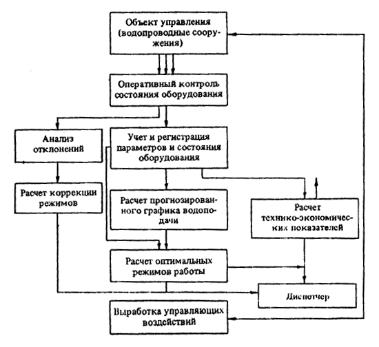
Комплекс этих задач предусматривает непрерывный контроль технологических параметров и состояния оборудования на насосных станциях, водоочистных сооружениях и на водопроводной сети с помощью датчиков и телемеханической аппаратуры или других средств сбора и передачи информации.
Алгоритмы решения задач достаточно просты и во многом зависят от характеристик используемых технических средств передачи данных. Общей чертой этих алгоритмов являются использование операций усреднения, линеаризации или интегрирования измеряемых величин, сравнение контролируемых параметров с предельно допустимыми значениями и т.д.
Оперативный учет контролируемых параметров осуществляется путем их регистрации с заданной периодичностью, формирования в виде массивов данных, хранимых в памяти ЭВМ, и выдачи диспетчеру выходных документов, содержащих учитываемые данные в часовом, сменном и суточном разрезах.
В объеме этих задач предусматриваются ежесменный и ежесуточный расчеты следующих технико-экономических показателей эксплуатации по насосным станциям:
фактических значений удельных расходов электроэнергии;
фактических значений удельных расходов химических реагентов;
водоподачи отдельными насосными станциями;
процента расхода воды на собственные нужды;
фактических значений технологической себестоимости воды по насосным станциям и водопроводу в целом.
Анализ технико-экономических показателей производится сравнением фактических значений с планируемыми. Результаты расчетов регистрируются, индицируются и представляются в виде сменных и суточных рапортов дежурному диспетчеру.
Управление подземными водоисточниками (артезианскими скважинами, шахтными колодцами, лучевыми водозаборами и др.) имеет ряд особенностей и должно учитывать следующие факторы:
эксплуатационные особенности скважин (колодцев);
гидравлические условия скважин (колодцев) и аспекты совместной работы группы скважин (колодцев);
экономические показатели скважин (колодцев).
Эксплуатационные особенности накладывают ряд ограничений на работу скважин (колодцев). Необходимо избегать частых «рывков», т.е. включений и выключений скважин, так как это может привести к ссыпке песка (пескованию скважин). Во многих случаях пуск скважин связан с необходимостью кратковременного выпуска воды с примесью песка. Скважины необходимо периодически останавливать для профилактического осмотра или ремонта насоса.
Во избежание перегрузок сборного водовода и энергетических линий необходимо осуществлять пуск нескольких скважин постепенно через определенные временные интервалы (например, через 10 мин). Скважины, работающие на специальных потребителей, отключать нельзя. В шахтных колодцах, имеющих два насоса, целесообразно, чтобы один насос постоянно находился в работе, а второй включался и отключался по мере необходимости.
Необходимо обеспечить контроль уровня воды в скважинах и не допускать его снижения ниже предельно допустимого значения.
Алгоритмы управления артезианскими скважинами предусматривают разделение их на три группы:
первая (группа А) - скважины, работающие в настоящий момент;
вторая (группа В) - скважины, находящиеся в резерве;
третья (группа С) - скважины, находящиеся в простое (готовые к работе).
Массивы номеров скважин упорядочиваются в памяти ЭВМ по величине удельного расхода электроэнергии. При необходимости уменьшения подачи воды от водозабора необходимо исключить из массива А скважину, имеющую наибольший удельный расход электроэнергии. Номер этой скважины следует перенести из массива А в массив С. Обратные действия следует производить при необходимости увеличения подачи воды. Одновременно необходимо контролировать продолжительность работы каждой скважины с целью своевременного проведения профилактического осмотра или ремонта. При этом номер выведенной из работы скважины следует перевести из массива А в массив В.
В последние годы все большее распространение получают групповые системы водоснабжения, обеспечивающие водой несколько городов, поселков, предприятий, рассредоточенных на значительной территории. Обычно в таких системах водоснабжения используются один общий источник (водозабор) и несколько местных источников. Управление такими водоисточниками представляет сложную проблему.
В задачи оперативного управления здесь входят помимо стабилизации давлений в диктующих точках каждой водопроводной сети также координация работы водоисточников, распределение воды общего водоисточника между населенными пунктами, оптимизация режимов работы сооружений центрального и локальных водоисточников и др. Общий алгоритм функционирования системы оперативного оптимального управления включает следующие расчеты:
прогнозирование почасовой и суточной потребностей в воде населенных пунктов, питаемых групповой системой водоснабжения;
определение максимально возможной суточной подачи воды общего и локальных водоисточников;
определение потребностей в воде от общего водоисточника каждого населенного пункта;
распределение подачи воды от общего водоисточника к каждому населенному пункту;
определение оптимальных условий работы сооружений общего водоисточника;
определение оптимальных режимов сооружений локальных водоисточников;
контроль и регистрацию параметров работы сооружений водоисточников и водопроводных сетей населенных пунктов;
расчет и анализ технико-экономических показателей работы групповой системы водоснабжения в целом и сооружений общего и локальных водоисточников.
Наиболее сложным является координированное управление общим и местными водоисточниками. При этом целесообразно в общем случае принять общий водоисточник в качестве базового и покрывать пики водопотребления за счет местных источников. Однако в ряде конкретных случаев может оказаться необходимым принять в качестве базовых некоторые местные водоисточники.
В отдельных случаях (например, в периоды летнего водопотребления) производительность водоисточников может оказаться недостаточной для удовлетворения потребности в воде всех потребителей групповой системы водоснабжения. Для этого используется алгоритм распределения воды общего водоисточника между всеми потребителями (городами, населенными пунктами, предприятиями и др.) пропорционально их потребности и с учетом приоритетов.
Структура системы подачи и распределения воды зависит от планировки города, месторасположения водоисточников, рельефа местности и других факторов. Несмотря на разнообразие схем водопроводных сетей городов, можно выделить ряд типовых элементов, из которых складывается структура большинства систем подачи и распределения воды:
а) насосная станция питает изолированную зону;
б) несколько насосных станций питают общую зону;
в) насосная станция подает воду в сеть и резервуар;
г) насосная станция питает сеть и несколько резервуаров;
д) насосная станция питает сеть, резервуар и насосную станцию следующей зоны.
Алгоритм расчета оптимального режима работы каждой конкретной системы подачи и распределения воды имеет индивидуальный характер и строится на сочетании алгоритмов управления типовыми элементами, входящими в состав данного водопровода.
Наиболее сложными и важными являются задачи оперативного планирования оптимальных режимов. Трудность таких расчетов связана с необходимостью построения математических моделей системы подачи и распределения воды и прогнозирования колебаний водопотребления на предстоящий период.
Анализ задач оперативного управления показал, что для расчета оптимальных режимов работы насосных станций в большинстве случаев нецелесообразно производить гидравлический расчет водопроводных сетей и использовать принятые при проектировании традиционные модели потокораспределения - расчетные схемы сетей. Это объясняется трудностью получения данных о фактических и требуемых значениях узловых расходов для каждого часа предстоящих суток, а также чрезмерно большими для оперативного управления затратами машинного времени на проведение расчетов даже при использовании мощных современных ЭВМ.
Гидравлический расчет следует производить при анализе нагруженности различных магистралей водопроводной сети, при поиске наивыгоднейших вариантов развития сетей, перераспределения водопотоков при использовании управляемых задвижек или поворотных затворов на магистралях, а также при анализе аварийных ситуаций на сети и поиске вариантов локализации аварий или минимизации недоотпуска воды при отключении аварийных участков и др.
Для выбора оптимальных режимов работы насосных станций требуются только данные о напорах на насосных станциях и в диктующих точках сети. В то же время основная часть информации, получаемой при гидравлическом расчете (о потерях напора и расходах по участкам), при этом не используется и является избыточной.
В связи с этим для расчета оптимальных режимов работы насосных станций рекомендуется использовать обобщенные математические модели, выражающие взаимосвязь напора Нн.ст и подачи Qн.ст воды насосной станции с давлением в диктующей точке сети Нд.т:
Нн.ст = Нд.т + а + b Qн.ст + с Q2н.ст,
где а, b, с - коэффициенты, полученные в результате статистической обработки данных о параметрах работы насосных станций и водопроводной сети.
В ряде случаев характеристика сети достаточно хорошо описывается простой линейной моделью:
Нн.ст = Нд.т + а + b Qн.ст.
Использование математических моделей указанного вида существенно облегчает расчет оптимальных режимов насосных станций при достаточной для практических целей точности решения. В целях повышения точности целесообразно производить периодическое уточнение моделей, т.е. программа расчета должна включать блок идентификации параметров модели.
Важной особенностью оперативного планирования является необходимость учета колебаний водопотребления в течение предстоящих суток. Водопотребление носит случайный характер, поэтому при планировании режимов необходимо осуществлять расчет по прогнозированию этого процесса на основе данных о подаче воды насосными станциями за прошедший период.
Оперативное планирование режимов работы насосной станции рекомендуются осуществлять путем декомпозиции этой задачи на ряд последовательно решаемых подзадач. При этом планируемый период разделяется на отрезки времени, в течение которых водопотребление принимается неизвестным и непрерывный график водопотребления заменяется дискретным (например, почасовым).
Оперативное планирование производится в такой последовательности:
расчет прогнозированного почасового графика водопотребления на предстоящие сутки;
расчет оптимальных параметров работы насосных станций (подачи, напора) для каждого часа предстоящих суток;
выбор оптимального состава работающих насосов для каждого часа суток.
В настоящее время разработаны алгоритмы и программы решения задач прогнозирования, выбора оптимального состава насосов, а также расчета оптимальных параметров работы насосных станций для ряда характерных структур систем подачи и распределения воды, сетей с одной или несколькими насосными станциями, сетей с насосными станциями и резервуарами, сетей с резервуарами и др.
В некоторых алгоритмах предусматривается одновременное решение задач расчета оптимальных параметров работы насосных станций и выбора оптимального состава работающих насосов.
Эффективность системы управления во многом зависит от рационального выбора комплекса технических средств (КТС), позволяющего своевременно получать и обрабатывать информацию в АСУ ТП и обеспечивать выполнение задач технологического управления.
Выбор технических средств должен производиться с учетом совместимости технических средств, модульности, надежности, максимальной эффективности и системного подхода.
Решение задач управления в АСУ ТП характеризуется интеграцией управления технологическим оборудованием и оперативно-производственного управления в единую систему при наличии тесного логического и информационного взаимодействия между ними. В соответствии с этим выбор КТС определяется функциональной структурой АСУ ТП, организационной структурой управления и информационной структурой, устанавливающей содержание и последовательность этапов обработки информации в системе.
КТС АСУ ТП должен выполнять следующие функции: связь с объектом и сбор информации, передачу информации, связь с оператором и отображение информации, обработку информации в соответствии с принятыми алгоритмами, накопление и хранение информации.
В соответствии с изложенным КТС АСУ ТП водоснабжения должен включать следующие основные виды аппаратуры: датчики, исполнительные механизмы, аппаратуру регулирования, средства связи и аппаратуру телемеханики, ЭВМ, диспетчерское оборудование.
Основой для получения первичной информации и технологических параметров процесса подачи, обработки и распределения воды являются датчики: расходомеры, манометры, уровнемеры, измерители и сигнализаторы динамического уровня воды в скважинах, измерители тока или потребляемой электроэнергии, качественных параметров воды и др.
В число исполнительных механизмов входят станции автоматического управления насосными агрегатами, электроприводы задвижек и поворотных затворов, механизмы управления электрооборудованием насосных станций, дозаторы химических реагентов. Некоторые виды исполнительных механизмов (например, герметичные, взрывобезопасные электроприводы для управления задвижками или затворами, установленными в затапливаемых или загазованных камерах на сети) пока еще не изготовляются, и это затрудняет автоматизацию водоснабжения. В АСУ ТП необходимо предусматривать применение на насосных станциях аппаратуры регулирования частоты вращения насосов (асинхронно-вентильных установок, частотных преобразователей, индукторных муфт скольжения и др.).
Так как городские водопроводные сооружения (насосные станции, резервуары, водоводы и распределительная сеть) рассредоточены на значительной территории, необходимой частью управления являются средства связи, с помощью которых осуществляется передача информации от сооружений в диспетчерские пункты и в обратном направлении. Для этих целей используются телемеханические комплексы, аппаратура управления и передачи информации.
Для передачи и первичной обработки информации рекомендуется также использовать микропроцессорные устройства, связанные между собой с помощью модемов и линий связи.
В качестве каналов связи используются, как правило, выделенные линии связи городской телефонной сети или радиоканалы. Ввиду трудности обеспечения такими каналами связи в условиях современных крупных городов целесообразно использовать для этих целей коммутируемые линии связи городской телефонной сети и соответствующую аппаратуру автоматического вызова и контроля передачи информации.
Для обработки поступающей информации и расчета оптимальных режимов работы водопроводных сооружений в АСУ ТП рекомендуется использовать мини- и микро-ЭВМ и построенные на их базе управляющие вычислительные комплексы.
Современные тенденции развития технических средств контроля и управления предусматривают ориентацию на использование программируемых микропроцессорных устройств, позволяющих совмещать функции первичной обработки, контроля и регистрации информации (ведение рабочих журналов эксплуатации) с функциями расчета режимов работы и технико-экономических показателей, а также с управлением по заданной программе.
Диспетчерское оборудование должно включать средства отображения и регистрации информации, аварийной связи с сооружениями и т.п. (дисплейные модули, диспетчерские щиты, мнемосхему водопроводной сети, электроуправляемые пишущие машинки, средства телефонной и радиосвязи).
Внедрение АСУ ТП водоснабжения позволяет значительно улучшить водоснабжение городов, получить экономию электроэнергии на подъем и транспортирование воды, снизить потери воды и уменьшить число аварий, сократить численность обслуживающего персонала.
Вместе с тем создание АСУ ТП связано с большими затратами на проектирование системы, приобретение и монтаж средств вычислительной техники, телемеханики, автоматики и контрольно-измерительной аппаратуры. При планировании работ по созданию АСУ ТП водоснабжения и анализе их работы необходимо правильно оценить показатели экономической эффективности АСУ ТП водоснабжения и определить пути их повышения.
Изложенные ниже методы позволяют оценить экономическую эффективность АСУ ТП, а также систем диспетчерского управления водоснабжением.
Внедрение АСУ ТП и систем диспетчерского управления водоснабжением позволяет получить экономию в сфере управления за счет частичного или полного высвобождения производственного персонала автоматизированных водопроводных сооружений.
Величину этой экономии ЭDч, руб., рекомендуется определять по формуле
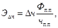
где Dч - число высвобожденных работников, чел.;
Фп.п, чп.п - соответственно фонд зарплаты, руб., и численность производственного персонала, чел.
Экономия в сфере производства достигается за счет автоматизации, телемеханизации сооружений, а также решения задач контроля, оперативного оптимального планирования, управления оборудованием и анализа режимов работы сооружений.
Рассмотрим вначале факторы, влияющие на производственные затраты. К их числу относятся:
расход электроэнергии на подъем и транспортирование воды;
расход химических реагентов на обработку воды;
стоимость аварийно-восстановительных работ вследствие сокращения числа аварий.
Уменьшение стоимости электроэнергии DСэл.эн, руб., потребляемой насосными станциями, обеспечивается за счет оптимизации режима работы насосов (уменьшения напора на выходе станций, уменьшения потерь электроэнергии при выборе оптимальной комбинации насосов и их работой при максимальных КПД и др.) и подсчитывается по формуле
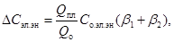
где Со.эл.эн - стоимость израсходованной насосной станцией электроэнергии в год обследования;
Qпл, Qо - подача воды соответственно в планируемом году внедрения АСУ ТП и в год обследования, тыс. м3;
b1, b2 - коэффициенты влияния АСУ ТП соответственно на сокращение потерь электроэнергии внутри насосной станции и на уменьшение расхода электроэнергии насосами на подачу воды в сеть.
Уменьшение стоимости расхода химических реагентов DСх.р, руб., подсчитывается по формуле
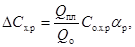
где Со.х.р - стоимость затрат химических реагентов в год обследования, руб.;
aр - коэффициент влияния АСУ ТП на сокращение расхода химических реагентов.
Снижение стоимости аварийно-восстановительных работ DСа-в.р, достигаемое вследствие уменьшения числа аварий при оптимизации режимов работы насосных станций и сети, подсчитывается по формуле
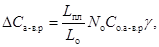
где Lпл - планируемая протяженность водопроводной сети на год внедрения АСУ ТП, км;
Lо - то же, в год обследования;
Nо - число аварий на сети в год обследования;
Со.а-в.р - средняя стоимость аварийно-восстановительных работ на одну аварию, руб.;
g - коэффициент влияния АСУ ТП на уменьшение числа аварий.
При внедрении АСУ ТП уменьшаются различные виды потерь воды (утечки из сети, потери воды при авариях, заводомерные утечки за счет уменьшения избыточных напоров в сети и др.).
Уменьшение потерь воды влияет на экономические показатели работы водопроводно-канализационных предприятий.
Поскольку водопроводы обычно действуют в условиях постоянного роста потребности в воде, уменьшение потерь воды приводит к соответствующему увеличению объема ее реализации.
Экономия за счет роста реализации воды DЭр.в, руб., подсчитывается по формуле
DЭр.в = Qпл (aут.с + aс.н + aав) Тв.ср,
где aут.с, aс.н, aав - коэффициенты влияния АСУ ТП соответственно на уменьшение расхода воды на утечки из сети, потери воды при авариях и на собственные нужды;
Тв.ср - средний тариф на воду в год внедрения АСУ ТП, руб/м3.
Увеличение объема реализации воды будет сопровождаться увеличением объема воды, поступающей в канализацию, и соответствующим ростом прибыли по системе канализации DПкан, равным:
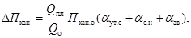
где Пкан.о - прибыль по системе канализации в год обследования, руб.
Уменьшение потерь воды дает также народнохозяйственную экономию капитальных вложений, которые потребовались бы при отсутствии АСУ ТП для соответствующего развития мощностей водопровода и канализации.
Приведенная народнохозяйственная экономия капитальных вложений DЭкап, руб., подсчитывается по формуле
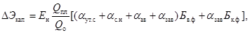
где Ен - нормативный коэффициент окупаемости капитальных вложений в отрасли;
Бв.ф, Бк.ф - стоимость основных фондов водопровода и канализации в год обследования, руб.;
aзав - коэффициент влияния АСУ ТП на уменьшение заводомерных утечек.
Кроме этого, решение задач анализа работы водопроводных сетей и расчета оптимальных путей строительства новых линий позволит уменьшить потребность в капитальных вложениях на развитие водопровода. Приведенная годовая народнохозяйственная экономия DЭстр, руб., подсчитывается по формуле
DЭстр = Ен Кстр aстр,
где Кстр - среднегодовые затраты на строительство новых линий, руб.;
aстр - коэффициент влияния АСУ ТП на уменьшение стоимости строительства.
Определенный народнохозяйственный и социальный эффект достигается за счет уменьшения расхода электроэнергии, которая может быть использована в других отраслях народного хозяйства, а также за счет улучшения водоснабжения населения и промышленности, однако численная оценка этих факторов затруднительна. С учетом сказанного общая экономия Э, руб., от внедрения АСУ ТП будет равна:
Э = DЭч + DСэл.эн + DСх.р + DСа-в.р +DЭр.в + DПкан + DЭкап + DЭстр.
Характерной чертой приведенных расчетов является экспертная оценка влияния АСУ ТП на ожидаемую экономию электроэнергии, реагентов, воды и другие факторы.
Рекомендуемые значения коэффициентов влияния автоматизации управления на показатели экономии приведены в табл. 8.
Таблица 8
|
Коэффициент влияния АСУ |
Рекомендуемый диапазон изменения коэффициентов |
Задачи АСУ ТП, влияющие на факторы экономии |
Коэффициент К2 |
|
|
1 |
2 |
3 |
4 |
5 |
|
Химические реагенты |
aр.ср |
0,05 - 0,1 |
Расчет оптимальных доз реагентов |
0,6 |
|
Централизованный контроль дозирования |
0,15 |
|||
|
Оперативный учет расхода реагентов |
0,05 |
|||
|
Расчет удельных расходов реагентов |
0,1 |
|||
|
Оперативное управление дозированием реагентов |
0,1 |
|||
|
Электроэгергия внутри наносной станции |
b1 |
0,015 - 0,025 |
Расчет оптимальных комбинаций насосов |
0,4 |
|
Централизованный контроль параметров работы насосной станции |
0,2 |
|||
|
Оперативное управление насосной станцией |
0,1 |
|||
|
Учет расхода электроэнергии |
0,1 |
|||
|
Учет времени работы насосов |
0,1 |
|||
|
Расчет удельных норм расхода электроэнергии |
0,1 |
|||
|
Электроэнергия на подачу воды |
b2 |
0,05 - 0,15 |
Прогнозирование водопотребления |
0,1 |
|
Расчет оптимальных параметров работы насосных станций |
0,2 |
|||
|
Централизованный контроль параметров работы насосных станций в сети |
0,2 |
|||
|
Оперативное управление, включая коррекцию режимов |
0,2 |
|||
|
Учет параметров работы насосных станций, резервуаров и сети |
0,1 |
|||
|
Анализ частоты коррекций режимов |
0,05 |
|||
|
Расчет удельных расходов электроэнергии |
0,05 |
|||
|
Анализ гидравлических режимов сети |
0,1 |
|||
|
Затраты на аварийно-восстановительные работы |
g |
0,06 - 0,25 |
Прогнозирование водопотребления |
0,1 |
|
Расчет оптимальных параметров работы насосных станций |
0,2 |
|||
|
Расчет графиков заполнения и срабатывания резервуаров |
0,1 |
|||
|
Централизованный контроль параметров работы насосных станций, резервуаров и сети |
0,2 |
|||
|
Оперативное управление насосными станциями |
0,2 |
|||
|
Оперативное управление задвижками на сети |
0,2 |
|||
|
Расход воды на собственные нужды |
aс.н |
0,003 - 0,015 |
Расчет оптимальных скоростей фильтрации |
0,3 |
|
Расчет графика вывода фильтров на промывку |
0,15 |
|||
|
Расчет режима работы насосных станций I подъема |
0,1 |
|||
|
Расчет распределения воды по технологическим линиям |
0,05 |
|||
|
Централизованный контроль работы фильтров |
0,1 |
|||
|
Оперативное управление фильтрами |
0,3 |
|||
|
Потери воды (утечки): |
Прогнозирование водопотребления |
0,1 |
||
|
из сети |
aут.с |
0,005 - 0,015 |
Расчет оптимальных параметров работы насосных станций |
0,2 |
|
при аварии |
aав |
0,005 - 0,01 |
Расчет оптимальных режимов заполнения и срабатывания резервуаров |
0,1 |
|
заводомерные |
aзав |
0,01 - 0,04 |
||
|
Централизованный контроль параметров работы насосных станций, резервуаров, сети |
0,2 |
|||
|
Оперативное управление, включая коррекцию режимов |
0,2 |
|||
|
Учет параметров работы насосных станций, резервуаров, сети |
0,1 |
|||
|
Построение пьезометрических графиков |
0,1 |
|||
|
Капитальные вложения в новое строительство |
aстр |
0,03 - 0,1 |
Анализ гидравлических режимов сетей |
0,1 |
|
Расчеты по замене насосного оборудования |
0,2 |
|||
|
Расчеты по изменению структуры зонирования |
0,2 |
|||
|
Расчеты по строительству новых линий сети |
0,5 |
Для каждого водопровода необходимо установить ожидаемые средние значения коэффициентов влияния АСУ ТП или системы диспетчерского управления. Поскольку автоматизация управления осуществляется, как правило, поэтапно, в этих коэффициентах необходимо также учесть степень охвата автоматизацией объектов водоснабжения К1 и степень автоматизации задач управления К2, например:
aр = К1 SК2 aр.ср,
где aр.ср - принимается по гр. 3 табл. 8.
При этом 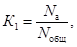
где Nа - производительность автоматизированных объектов, м3/сут;
Nобщ - общая производительность водопроводного предприятия, м3/сут.
При подсчете SК2 необходимо иметь в виду, что для систем диспетчерского управления характерны задачи (функции) централизованного контроля, учета и оперативного управления, а для АСУ ТП помимо этих задач нужно учесть коэффициенты К2, соответствующие предусмотренным в АСУ ТП задачам.
Ожидаемая годовая экономия от внедрения АСУ ТП составит в среднем 6 руб. на 1000 м3 годовой подачи водопровода (для систем диспетчерского управления - примерно 3 руб.). Эти данные можно использовать для предварительной экспрессной оценки ожидаемой экономии.
Затраты на создание АСУ ТП во многих случаях резко возрастают из-за недостаточной подготовленности водопроводов к внедрению АСУ ТП, т.е. отсутствия необходимой аппаратуры для автоматизации насосных станций, средств телемеханики и контрольно-измерительных приборов, линий связи и др.
Эксплуатационные затраты Ээксп, руб., включают такие статьи, как заработная плата персонала АСУ ТП, стоимость материалов и электроэнергии на эксплуатацию оборудования, отчисления на ремонт и амортизацию.
Расчет экономической эффективности завершается определением таких обобщенных показателей, как годовой экономический эффект Эгод, руб., расчетный коэффициент эффективности затрат Ер и срок окупаемости Ток, год:
Эгод = Э - Ээксп - 0,15 (Кпп + Коб);
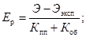
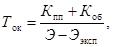
где Кпп - производственные затраты (проектирование), руб.;
Коб - затраты на приобретены и наладку оборудования, строительно-монтажные работы и пр., руб.
Эффективность затрат Ер на создание АСУ ТП водоснабжения должна быть выше нормативного значения Ен = 0,37 (для систем диспетчерского управления Ен = 0,15).